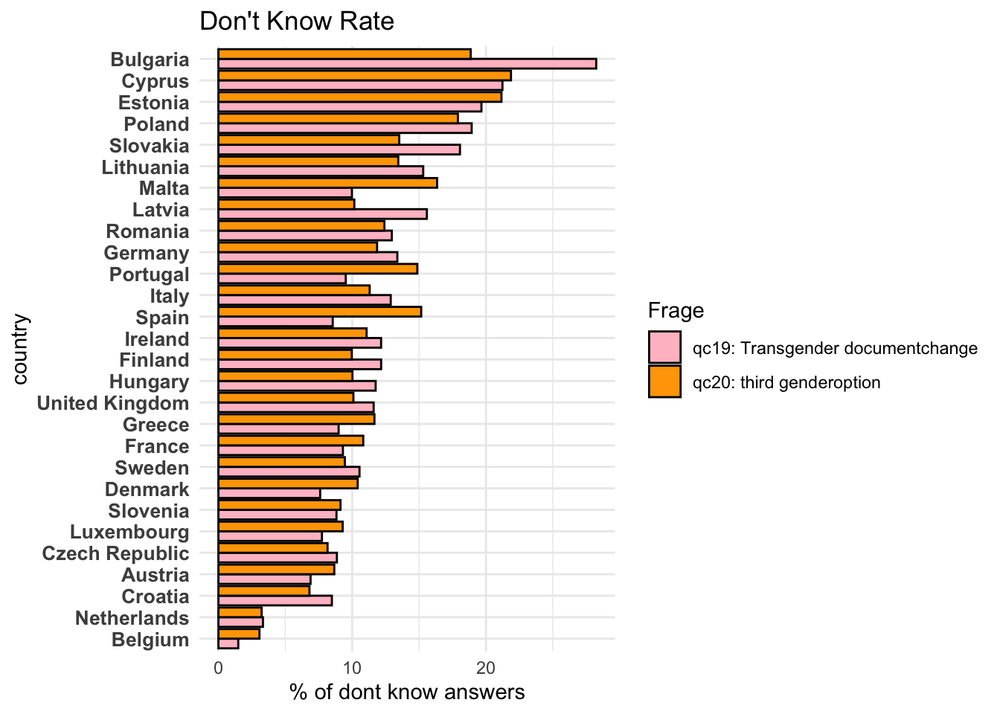
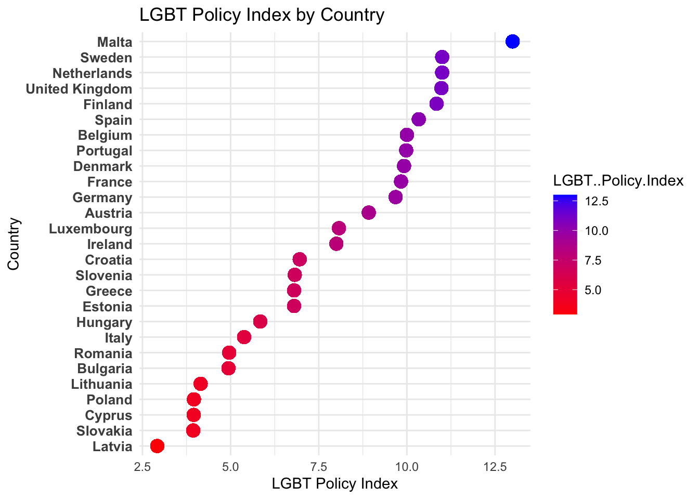
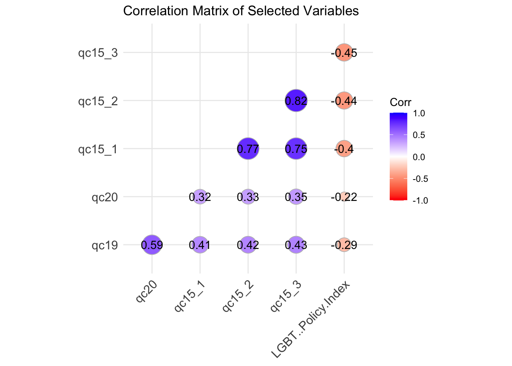

The following object is masked from 'package:stats':
filter
The following objects are masked from 'package:base':
cbind, rbind
library(readxl)
Data:
studyno1 studyno2 doi version
Min. :7575 Min. :7575 Length:27438 Length:27438
1st Qu.:7575 1st Qu.:7575 Class :character Class :character
Median :7575 Median :7575 Mode :character Mode :character
Mean :7575 Mean :7575
3rd Qu.:7575 3rd Qu.:7575
Max. :7575 Max. :7575
edition survey caseid uniqid serialid
Min. :1 Min. :914 Min. : 1 Min. :1.00e+07 Min. : 1
1st Qu.:1 1st Qu.:914 1st Qu.: 731 1st Qu.:8.00e+07 1st Qu.: 6860
Median :1 Median :914 Median : 1436 Median :2.20e+08 Median :13720
Mean :1 Mean :914 Mean : 202789 Mean :2.38e+08 Mean :13720
3rd Qu.:1 3rd Qu.:914 3rd Qu.: 2322 3rd Qu.:3.70e+08 3rd Qu.:20579
Max. :1 Max. :914 Max. :9999999 Max. :1.00e+09 Max. :27438
tnscntry country isocntry d11
Min. : 1.0 Min. : 1.00 Length:27438 Min. :15.00
1st Qu.: 8.0 1st Qu.: 8.00 Class :character 1st Qu.:37.00
Median :21.0 Median :17.00 Mode :character Median :53.00
Mean :22.2 Mean :16.32 Mean :51.56
3rd Qu.:36.0 3rd Qu.:24.00 3rd Qu.:66.00
Max. :46.0 Max. :32.00 Max. :98.00
d11r1 d11r2 d11r3 gen1
Min. :1.000 Min. :1.000 Min. :1.000 Min. :0.000000
1st Qu.:2.000 1st Qu.:3.000 1st Qu.:3.000 1st Qu.:0.000000
Median :3.000 Median :4.000 Median :4.000 Median :0.000000
Mean :3.095 Mean :4.097 Mean :4.199 Mean :0.001494
3rd Qu.:4.000 3rd Qu.:6.000 3rd Qu.:6.000 3rd Qu.:0.000000
Max. :4.000 Max. :6.000 Max. :7.000 Max. :1.000000
gen2 gen3 gen4 gen5
Min. :0.0000 Min. :0.0000 Min. :0.0000 Min. :0.0000
1st Qu.:0.0000 1st Qu.:0.0000 1st Qu.:0.0000 1st Qu.:0.0000
Median :0.0000 Median :0.0000 Median :0.0000 Median :0.0000
Mean :0.1141 Mean :0.1156 Mean :0.3549 Mean :0.2581
3rd Qu.:0.0000 3rd Qu.:0.0000 3rd Qu.:1.0000 3rd Qu.:1.0000
Max. :1.0000 Max. :1.0000 Max. :1.0000 Max. :1.0000
gen6 q1_1 q1_2 q1_3
Min. :0.0000 Min. :0.00000 Min. :0.00000 Min. :0.00000
1st Qu.:0.0000 1st Qu.:0.00000 1st Qu.:0.00000 1st Qu.:0.00000
Median :0.0000 Median :0.00000 Median :0.00000 Median :0.00000
Mean :0.2713 Mean :0.03681 Mean :0.03641 Mean :0.05791
3rd Qu.:1.0000 3rd Qu.:0.00000 3rd Qu.:0.00000 3rd Qu.:0.00000
Max. :1.0000 Max. :1.00000 Max. :1.00000 Max. :1.00000
q1_4 q1_5 q1_6 q1_7
Min. :0.00000 Min. :0.00000 Min. :0.00000 Min. :0.00000
1st Qu.:0.00000 1st Qu.:0.00000 1st Qu.:0.00000 1st Qu.:0.00000
Median :0.00000 Median :0.00000 Median :0.00000 Median :0.00000
Mean :0.03834 Mean :0.03597 Mean :0.03849 Mean :0.03368
3rd Qu.:0.00000 3rd Qu.:0.00000 3rd Qu.:0.00000 3rd Qu.:0.00000
Max. :1.00000 Max. :1.00000 Max. :1.00000 Max. :1.00000
q1_8 q1_9 q1_10 q1_11
Min. :0.00000 Min. :0.00000 Min. :0.00000 Min. :0.00000
1st Qu.:0.00000 1st Qu.:0.00000 1st Qu.:0.00000 1st Qu.:0.00000
Median :0.00000 Median :0.00000 Median :0.00000 Median :0.00000
Mean :0.03998 Mean :0.01221 Mean :0.03747 Mean :0.04097
3rd Qu.:0.00000 3rd Qu.:0.00000 3rd Qu.:0.00000 3rd Qu.:0.00000
Max. :1.00000 Max. :1.00000 Max. :1.00000 Max. :1.00000
q1_12 q1_13 q1_14 q1_15
Min. :0.00000 Min. :0.00000 Min. :0.00000 Min. :0.00000
1st Qu.:0.00000 1st Qu.:0.00000 1st Qu.:0.00000 1st Qu.:0.00000
Median :0.00000 Median :0.00000 Median :0.00000 Median :0.00000
Mean :0.03677 Mean :0.03728 Mean :0.03707 Mean :0.03677
3rd Qu.:0.00000 3rd Qu.:0.00000 3rd Qu.:0.00000 3rd Qu.:0.00000
Max. :1.00000 Max. :1.00000 Max. :1.00000 Max. :1.00000
q1_16 q1_17 q1_18 q1_19
Min. :0.00000 Min. :0.00000 Min. :0.00000 Min. :0.00000
1st Qu.:0.00000 1st Qu.:0.00000 1st Qu.:0.00000 1st Qu.:0.00000
Median :0.00000 Median :0.00000 Median :0.00000 Median :0.00000
Mean :0.01768 Mean :0.03714 Mean :0.03677 Mean :0.03841
3rd Qu.:0.00000 3rd Qu.:0.00000 3rd Qu.:0.00000 3rd Qu.:0.00000
Max. :1.00000 Max. :1.00000 Max. :1.00000 Max. :1.00000
q1_20 q1_21 q1_22 q1_23
Min. :0.00000 Min. :0.00000 Min. :0.00000 Min. :0.00000
1st Qu.:0.00000 1st Qu.:0.00000 1st Qu.:0.00000 1st Qu.:0.00000
Median :0.00000 Median :0.00000 Median :0.00000 Median :0.00000
Mean :0.03717 Mean :0.03717 Mean :0.01735 Mean :0.03951
3rd Qu.:0.00000 3rd Qu.:0.00000 3rd Qu.:0.00000 3rd Qu.:0.00000
Max. :1.00000 Max. :1.00000 Max. :1.00000 Max. :1.00000
q1_24 q1_25 q1_26 q1_27
Min. :0.00000 Min. :0.00000 Min. :0.00000 Min. :0.00000
1st Qu.:0.00000 1st Qu.:0.00000 1st Qu.:0.00000 1st Qu.:0.00000
Median :0.00000 Median :0.00000 Median :0.00000 Median :0.00000
Mean :0.03965 Mean :0.03666 Mean :0.03823 Mean :0.04067
3rd Qu.:0.00000 3rd Qu.:0.00000 3rd Qu.:0.00000 3rd Qu.:0.00000
Max. :1.00000 Max. :1.00000 Max. :1.00000 Max. :1.00000
q1_28 q1_29 q1_30 d70
Min. :0.00000 Min. :0.000000 Min. :0 Min. :1.000
1st Qu.:0.00000 1st Qu.:0.000000 1st Qu.:0 1st Qu.:1.000
Median :0.00000 Median :0.000000 Median :0 Median :2.000
Mean :0.03725 Mean :0.004446 Mean :0 Mean :1.956
3rd Qu.:0.00000 3rd Qu.:0.000000 3rd Qu.:0 3rd Qu.:2.000
Max. :1.00000 Max. :1.000000 Max. :0 Max. :5.000
d71_1 d71_2 d71_3 polintr qa1
Min. :1.000 Min. :1.000 Min. :1.000 Min. :1.000 Min. :1.00
1st Qu.:2.000 1st Qu.:2.000 1st Qu.:2.000 1st Qu.:2.000 1st Qu.:2.00
Median :2.000 Median :2.000 Median :2.000 Median :2.000 Median :2.00
Mean :2.007 Mean :2.175 Mean :2.032 Mean :2.334 Mean :2.44
3rd Qu.:2.000 3rd Qu.:3.000 3rd Qu.:2.000 3rd Qu.:3.000 3rd Qu.:3.00
Max. :4.000 Max. :4.000 Max. :4.000 Max. :4.000 Max. :5.00
qa2_1 qa2_2 qa2_3 qa2_4
Min. :0.000 Min. :0.000 Min. :0.000 Min. :0.000
1st Qu.:0.000 1st Qu.:0.000 1st Qu.:0.000 1st Qu.:0.000
Median :0.000 Median :0.000 Median :1.000 Median :0.000
Mean :0.119 Mean :0.356 Mean :0.581 Mean :0.279
3rd Qu.:0.000 3rd Qu.:1.000 3rd Qu.:1.000 3rd Qu.:1.000
Max. :1.000 Max. :1.000 Max. :1.000 Max. :1.000
NA's :10323 NA's :10323 NA's :10323 NA's :10323
qa2_5 qa2_6 qa2_7 qa2_8
Min. :0.00 Min. :0.000 Min. :0.00 Min. :0.000
1st Qu.:0.00 1st Qu.:0.000 1st Qu.:0.00 1st Qu.:0.000
Median :0.00 Median :0.000 Median :0.00 Median :0.000
Mean :0.21 Mean :0.092 Mean :0.02 Mean :0.006
3rd Qu.:0.00 3rd Qu.:0.000 3rd Qu.:0.00 3rd Qu.:0.000
Max. :1.00 Max. :1.000 Max. :1.00 Max. :1.000
NA's :10323 NA's :10323 NA's :10323 NA's :10323
qa3_1 qa3_2 qa3_3 qa3_4
Min. :0.000 Min. :0.000 Min. :0.000 Min. :0.000
1st Qu.:0.000 1st Qu.:0.000 1st Qu.:0.000 1st Qu.:0.000
Median :0.000 Median :0.000 Median :0.000 Median :0.000
Mean :0.288 Mean :0.286 Mean :0.185 Mean :0.156
3rd Qu.:1.000 3rd Qu.:1.000 3rd Qu.:0.000 3rd Qu.:0.000
Max. :1.000 Max. :1.000 Max. :1.000 Max. :1.000
NA's :18626 NA's :18626 NA's :18626 NA's :18626
qa3_5 qa3_6 qa3_7 qa4a
Min. :0.000 Min. :0.000 Min. :0.000 Min. :1.000
1st Qu.:0.000 1st Qu.:0.000 1st Qu.:0.000 1st Qu.:2.000
Median :0.000 Median :0.000 Median :0.000 Median :4.000
Mean :0.254 Mean :0.154 Mean :0.076 Mean :3.674
3rd Qu.:1.000 3rd Qu.:0.000 3rd Qu.:0.000 3rd Qu.:5.000
Max. :1.000 Max. :1.000 Max. :1.000 Max. :8.000
NA's :18626 NA's :18626 NA's :18626
qa4b_1 qa4b_2 qa4b_3 qa4b_4
Min. :0.0000 Min. :0.0000 Min. :0.0000 Min. :0.0000
1st Qu.:0.0000 1st Qu.:0.0000 1st Qu.:0.0000 1st Qu.:0.0000
Median :0.0000 Median :0.0000 Median :0.0000 Median :0.0000
Mean :0.2795 Mean :0.2235 Mean :0.3241 Mean :0.2958
3rd Qu.:1.0000 3rd Qu.:0.0000 3rd Qu.:1.0000 3rd Qu.:1.0000
Max. :1.0000 Max. :1.0000 Max. :1.0000 Max. :1.0000
NA's :962 NA's :962 NA's :962 NA's :962
qa4b_5 qa4b_6 qa4b_7 qa4b_8
Min. :0.0000 Min. :0.0000 Min. :0.0000 Min. :0.0000
1st Qu.:0.0000 1st Qu.:0.0000 1st Qu.:0.0000 1st Qu.:0.0000
Median :0.0000 Median :0.0000 Median :0.0000 Median :0.0000
Mean :0.3374 Mean :0.2733 Mean :0.0264 Mean :0.0358
3rd Qu.:1.0000 3rd Qu.:1.0000 3rd Qu.:0.0000 3rd Qu.:0.0000
Max. :1.0000 Max. :1.0000 Max. :1.0000 Max. :1.0000
NA's :962 NA's :962 NA's :962 NA's :962
qa4t_1 qa4t_2 qa4t_3 qa4t_4
Min. :0.0000 Min. :0.0000 Min. :0.0000 Min. :0.0000
1st Qu.:0.0000 1st Qu.:0.0000 1st Qu.:0.0000 1st Qu.:0.0000
Median :0.0000 Median :0.0000 Median :1.0000 Median :0.0000
Mean :0.4573 Mean :0.2988 Mean :0.5163 Mean :0.4351
3rd Qu.:1.0000 3rd Qu.:1.0000 3rd Qu.:1.0000 3rd Qu.:1.0000
Max. :1.0000 Max. :1.0000 Max. :1.0000 Max. :1.0000
qa4t_5 qa4t_6 qa4t_7 qa4t_8
Min. :0.0000 Min. :0.0000 Min. :0.00000 Min. :0.00000
1st Qu.:0.0000 1st Qu.:0.0000 1st Qu.:0.00000 1st Qu.:0.00000
Median :1.0000 Median :0.0000 Median :0.00000 Median :0.00000
Mean :0.5558 Mean :0.3599 Mean :0.03386 Mean :0.03506
3rd Qu.:1.0000 3rd Qu.:1.0000 3rd Qu.:0.00000 3rd Qu.:0.00000
Max. :1.0000 Max. :1.0000 Max. :1.00000 Max. :1.00000
qa5a qa5b_1 qa5b_2 qa5b_3
Min. : 1.000 Min. :0.0000 Min. :0.0000 Min. :0.0000
1st Qu.: 3.000 1st Qu.:0.0000 1st Qu.:0.0000 1st Qu.:0.0000
Median : 5.000 Median :0.0000 Median :0.0000 Median :0.0000
Mean : 5.788 Mean :0.1506 Mean :0.2339 Mean :0.1775
3rd Qu.: 8.000 3rd Qu.:0.0000 3rd Qu.:0.0000 3rd Qu.:0.0000
Max. :13.000 Max. :1.0000 Max. :1.0000 Max. :1.0000
NA's :2033 NA's :2033 NA's :2033
qa5b_4 qa5b_5 qa5b_6 qa5b_7
Min. :0.0000 Min. :0.0000 Min. :0.0000 Min. :0.0000
1st Qu.:0.0000 1st Qu.:0.0000 1st Qu.:0.0000 1st Qu.:0.0000
Median :0.0000 Median :0.0000 Median :0.0000 Median :0.0000
Mean :0.1835 Mean :0.2113 Mean :0.2361 Mean :0.2234
3rd Qu.:0.0000 3rd Qu.:0.0000 3rd Qu.:0.0000 3rd Qu.:0.0000
Max. :1.0000 Max. :1.0000 Max. :1.0000 Max. :1.0000
NA's :2033 NA's :2033 NA's :2033 NA's :2033
qa5b_8 qa5b_9 qa5b_10 qa5b_11
Min. :0.0000 Min. :0.000 Min. :0.0000 Min. :0.0000
1st Qu.:0.0000 1st Qu.:0.000 1st Qu.:0.0000 1st Qu.:0.0000
Median :0.0000 Median :0.000 Median :0.0000 Median :0.0000
Mean :0.1971 Mean :0.187 Mean :0.0046 Mean :0.0235
3rd Qu.:0.0000 3rd Qu.:0.000 3rd Qu.:0.0000 3rd Qu.:0.0000
Max. :1.0000 Max. :1.000 Max. :1.0000 Max. :1.0000
NA's :2033 NA's :2033 NA's :2033 NA's :2033
qa5b_12 qa5b_13 qa5t_1 qa5t_2
Min. :0.0000 Min. :0.0000 Min. :0.000 Min. :0.0000
1st Qu.:0.0000 1st Qu.:0.0000 1st Qu.:0.000 1st Qu.:0.0000
Median :0.0000 Median :0.0000 Median :0.000 Median :0.0000
Mean :0.0254 Mean :0.0328 Mean :0.215 Mean :0.3317
3rd Qu.:0.0000 3rd Qu.:0.0000 3rd Qu.:0.000 3rd Qu.:1.0000
Max. :1.0000 Max. :1.0000 Max. :1.000 Max. :1.0000
NA's :2033 NA's :2033
qa5t_3 qa5t_4 qa5t_5 qa5t_6
Min. :0.0000 Min. :0.000 Min. :0.0000 Min. :0.0000
1st Qu.:0.0000 1st Qu.:0.000 1st Qu.:0.0000 1st Qu.:0.0000
Median :0.0000 Median :0.000 Median :0.0000 Median :0.0000
Mean :0.2576 Mean :0.277 Mean :0.3142 Mean :0.3249
3rd Qu.:1.0000 3rd Qu.:1.000 3rd Qu.:1.0000 3rd Qu.:1.0000
Max. :1.0000 Max. :1.000 Max. :1.0000 Max. :1.0000
qa5t_7 qa5t_8 qa5t_9 qa5t_10
Min. :0.0000 Min. :0.0000 Min. :0.0000 Min. :0.0000
1st Qu.:0.0000 1st Qu.:0.0000 1st Qu.:0.0000 1st Qu.:0.0000
Median :0.0000 Median :0.0000 Median :0.0000 Median :0.0000
Mean :0.2902 Mean :0.2555 Mean :0.2983 Mean :0.0223
3rd Qu.:1.0000 3rd Qu.:1.0000 3rd Qu.:1.0000 3rd Qu.:0.0000
Max. :1.0000 Max. :1.0000 Max. :1.0000 Max. :1.0000
qa5t_11 qa5t_12 qa5t_13 qa5t1
Min. :0.00000 Min. :0.00000 Min. :0.00000 Min. :0.0000
1st Qu.:0.00000 1st Qu.:0.00000 1st Qu.:0.00000 1st Qu.:0.0000
Median :0.00000 Median :0.00000 Median :0.00000 Median :1.0000
Mean :0.02726 Mean :0.03317 Mean :0.06444 Mean :0.6335
3rd Qu.:0.00000 3rd Qu.:0.00000 3rd Qu.:0.00000 3rd Qu.:1.0000
Max. :1.00000 Max. :1.00000 Max. :1.00000 Max. :1.0000
qa5t2 qa6_1 qa6_2 qa6_3
Min. :0.0000 Min. :0.0000 Min. :0.0000 Min. :0.0000
1st Qu.:0.0000 1st Qu.:0.0000 1st Qu.:0.0000 1st Qu.:0.0000
Median :1.0000 Median :0.0000 Median :0.0000 Median :0.0000
Mean :0.5918 Mean :0.4154 Mean :0.2355 Mean :0.1038
3rd Qu.:1.0000 3rd Qu.:1.0000 3rd Qu.:0.0000 3rd Qu.:0.0000
Max. :1.0000 Max. :1.0000 Max. :1.0000 Max. :1.0000
qa6_4 qa6_5 qa6_6 qa6_7
Min. :0.0000 Min. :0.000 Min. :0.0000 Min. :0.00000
1st Qu.:0.0000 1st Qu.:0.000 1st Qu.:0.0000 1st Qu.:0.00000
Median :0.0000 Median :0.000 Median :0.0000 Median :0.00000
Mean :0.3096 Mean :0.371 Mean :0.1804 Mean :0.01833
3rd Qu.:1.0000 3rd Qu.:1.000 3rd Qu.:0.0000 3rd Qu.:0.00000
Max. :1.0000 Max. :1.000 Max. :1.0000 Max. :1.00000
qa6_8 qa7 qa8 qa9
Min. :0.00000 Min. :1.000 Min. :1.000 Min. :1.000
1st Qu.:0.00000 1st Qu.:2.000 1st Qu.:1.000 1st Qu.:2.000
Median :0.00000 Median :2.000 Median :1.000 Median :2.000
Mean :0.02887 Mean :2.237 Mean :1.662 Mean :2.718
3rd Qu.:0.00000 3rd Qu.:3.000 3rd Qu.:2.000 3rd Qu.:3.000
Max. :1.00000 Max. :5.000 Max. :4.000 Max. :6.000
qa10_1 qa10_2 qa10_3 qa10_4
Min. :0.0000 Min. :0.0000 Min. :0.0000 Min. :0.0000
1st Qu.:0.0000 1st Qu.:0.0000 1st Qu.:0.0000 1st Qu.:0.0000
Median :0.0000 Median :0.0000 Median :0.0000 Median :0.0000
Mean :0.2863 Mean :0.4525 Mean :0.4047 Mean :0.3222
3rd Qu.:1.0000 3rd Qu.:1.0000 3rd Qu.:1.0000 3rd Qu.:1.0000
Max. :1.0000 Max. :1.0000 Max. :1.0000 Max. :1.0000
qa10_5 qa10_6 qa11 qa12
Min. :0.000000 Min. :0.00000 Min. :1.000 Min. :1.000
1st Qu.:0.000000 1st Qu.:0.00000 1st Qu.:2.000 1st Qu.:2.000
Median :0.000000 Median :0.00000 Median :3.000 Median :2.000
Mean :0.008601 Mean :0.03991 Mean :2.472 Mean :2.759
3rd Qu.:0.000000 3rd Qu.:0.00000 3rd Qu.:3.000 3rd Qu.:4.000
Max. :1.000000 Max. :1.00000 Max. :5.000 Max. :6.000
qa13 qa14 qa15_1 qa15_2
Min. :1.000 Min. :1.000 Min. :0.00 Min. :0.000
1st Qu.:2.000 1st Qu.:1.000 1st Qu.:0.00 1st Qu.:0.000
Median :3.000 Median :1.000 Median :0.00 Median :1.000
Mean :3.374 Mean :1.786 Mean :0.31 Mean :0.609
3rd Qu.:5.000 3rd Qu.:2.000 3rd Qu.:1.00 3rd Qu.:1.000
Max. :7.000 Max. :6.000 Max. :1.00 Max. :1.000
NA's :17191 NA's :17191
qa15_3 qa15_4 qa15_5 qa16_1
Min. :0.000 Min. :0.000 Min. :0.000 Min. :1.000
1st Qu.:0.000 1st Qu.:0.000 1st Qu.:0.000 1st Qu.:1.000
Median :0.000 Median :0.000 Median :0.000 Median :2.000
Mean :0.095 Mean :0.352 Mean :0.032 Mean :2.178
3rd Qu.:0.000 3rd Qu.:1.000 3rd Qu.:0.000 3rd Qu.:3.000
Max. :1.000 Max. :1.000 Max. :1.000 Max. :5.000
NA's :17191 NA's :17191 NA's :17191
qa16_2 qa16_3 qa16_4 qa17
Min. :1.000 Min. :1.000 Min. :1.000 Min. :1.000
1st Qu.:2.000 1st Qu.:2.000 1st Qu.:2.000 1st Qu.:2.000
Median :2.000 Median :2.000 Median :2.000 Median :2.000
Mean :2.617 Mean :2.338 Mean :2.415 Mean :2.487
3rd Qu.:3.000 3rd Qu.:3.000 3rd Qu.:3.000 3rd Qu.:3.000
Max. :5.000 Max. :5.000 Max. :5.000 Max. :5.000
qa18a qa18b_1 qa18b_2 qa18b_3
Min. :1.000 Min. :0.0000 Min. :0.0000 Min. :0.0000
1st Qu.:1.000 1st Qu.:0.0000 1st Qu.:0.0000 1st Qu.:0.0000
Median :2.000 Median :0.0000 Median :0.0000 Median :0.0000
Mean :2.823 Mean :0.3085 Mean :0.2957 Mean :0.2581
3rd Qu.:4.000 3rd Qu.:1.0000 3rd Qu.:1.0000 3rd Qu.:1.0000
Max. :9.000 Max. :1.0000 Max. :1.0000 Max. :1.0000
NA's :1321 NA's :1321 NA's :1321
qa18b_4 qa18b_5 qa18b_6 qa18b_7
Min. :0.0000 Min. :0.0000 Min. :0.0000 Min. :0.0000
1st Qu.:0.0000 1st Qu.:0.0000 1st Qu.:0.0000 1st Qu.:0.0000
Median :0.0000 Median :0.0000 Median :0.0000 Median :0.0000
Mean :0.2232 Mean :0.1815 Mean :0.2667 Mean :0.0203
3rd Qu.:0.0000 3rd Qu.:0.0000 3rd Qu.:1.0000 3rd Qu.:0.0000
Max. :1.0000 Max. :1.0000 Max. :1.0000 Max. :1.0000
NA's :1321 NA's :1321 NA's :1321 NA's :1321
qa18b_8 qa18b_9 qa18t_1 qa18t_2
Min. :0.0000 Min. :0.0000 Min. :0.0000 Min. :0.0000
1st Qu.:0.0000 1st Qu.:0.0000 1st Qu.:0.0000 1st Qu.:0.0000
Median :0.0000 Median :0.0000 Median :1.0000 Median :0.0000
Mean :0.0611 Mean :0.0113 Mean :0.7331 Mean :0.3969
3rd Qu.:0.0000 3rd Qu.:0.0000 3rd Qu.:1.0000 3rd Qu.:1.0000
Max. :1.0000 Max. :1.0000 Max. :1.0000 Max. :1.0000
NA's :1321 NA's :1321
qa18t_3 qa18t_4 qa18t_5 qa18t_6
Min. :0.000 Min. :0.0000 Min. :0.0000 Min. :0.0000
1st Qu.:0.000 1st Qu.:0.0000 1st Qu.:0.0000 1st Qu.:0.0000
Median :0.000 Median :0.0000 Median :0.0000 Median :0.0000
Mean :0.291 Mean :0.4236 Mean :0.2524 Mean :0.3004
3rd Qu.:1.000 3rd Qu.:1.0000 3rd Qu.:1.0000 3rd Qu.:1.0000
Max. :1.000 Max. :1.0000 Max. :1.0000 Max. :1.0000
qa18t_7 qa18t_8 qa18t_9 qb1_1
Min. :0.00000 Min. :0.00000 Min. :0.000000 Min. :0.0000
1st Qu.:0.00000 1st Qu.:0.00000 1st Qu.:0.000000 1st Qu.:0.0000
Median :0.00000 Median :0.00000 Median :0.000000 Median :0.0000
Mean :0.03134 Mean :0.09669 Mean :0.009585 Mean :0.2385
3rd Qu.:0.00000 3rd Qu.:0.00000 3rd Qu.:0.000000 3rd Qu.:0.0000
Max. :1.00000 Max. :1.00000 Max. :1.000000 Max. :1.0000
qb1_2 qb1_3 qb1_4 qb1_5
Min. :0.0000 Min. :0.0000 Min. :0.0000 Min. :0.0000
1st Qu.:0.0000 1st Qu.:0.0000 1st Qu.:0.0000 1st Qu.:0.0000
Median :0.0000 Median :0.0000 Median :0.0000 Median :0.0000
Mean :0.1836 Mean :0.1682 Mean :0.4032 Mean :0.2852
3rd Qu.:0.0000 3rd Qu.:0.0000 3rd Qu.:1.0000 3rd Qu.:1.0000
Max. :1.0000 Max. :1.0000 Max. :1.0000 Max. :1.0000
qb1_6 qb1_7 qb1_8 qb1_9
Min. :0.0000 Min. :0.000 Min. :0.0000 Min. :0.0000
1st Qu.:0.0000 1st Qu.:0.000 1st Qu.:0.0000 1st Qu.:0.0000
Median :0.0000 Median :0.000 Median :0.0000 Median :0.0000
Mean :0.2077 Mean :0.178 Mean :0.2362 Mean :0.3041
3rd Qu.:0.0000 3rd Qu.:0.000 3rd Qu.:0.0000 3rd Qu.:1.0000
Max. :1.0000 Max. :1.000 Max. :1.0000 Max. :1.0000
qb1_10 qb1_11 qb1_12 qb2_1
Min. :0.00000 Min. :0.00000 Min. :0.00000 Min. :1.000
1st Qu.:0.00000 1st Qu.:0.00000 1st Qu.:0.00000 1st Qu.:1.000
Median :0.00000 Median :0.00000 Median :0.00000 Median :1.000
Mean :0.01549 Mean :0.02675 Mean :0.05128 Mean :1.536
3rd Qu.:0.00000 3rd Qu.:0.00000 3rd Qu.:0.00000 3rd Qu.:2.000
Max. :1.00000 Max. :1.00000 Max. :1.00000 Max. :5.000
qb2_2 qb2_3 qb2_4 qb3_1 qb3_2
Min. :1.000 Min. :1.000 Min. :1.00 Min. :1.000 Min. :1.000
1st Qu.:1.000 1st Qu.:1.000 1st Qu.:1.00 1st Qu.:1.000 1st Qu.:1.000
Median :1.000 Median :1.000 Median :1.00 Median :1.000 Median :2.000
Mean :1.606 Mean :1.627 Mean :1.59 Mean :1.709 Mean :2.066
3rd Qu.:2.000 3rd Qu.:2.000 3rd Qu.:2.00 3rd Qu.:2.000 3rd Qu.:2.000
Max. :5.000 Max. :5.000 Max. :5.00 Max. :5.000 Max. :5.000
qb3_3 qb3_4 qb3_5 qb3_6
Min. :1.000 Min. :1.000 Min. :1.000 Min. :1.000
1st Qu.:1.000 1st Qu.:1.000 1st Qu.:1.000 1st Qu.:1.000
Median :2.000 Median :1.000 Median :1.000 Median :1.000
Mean :1.815 Mean :1.656 Mean :1.746 Mean :1.658
3rd Qu.:2.000 3rd Qu.:2.000 3rd Qu.:2.000 3rd Qu.:2.000
Max. :5.000 Max. :5.000 Max. :5.000 Max. :5.000
qb3_7 qb4_1 qb4_2 qb4_3
Min. :1.000 Min. :1.000 Min. :1.000 Min. :1.000
1st Qu.:1.000 1st Qu.:1.000 1st Qu.:1.000 1st Qu.:1.000
Median :2.000 Median :1.000 Median :1.000 Median :1.000
Mean :1.814 Mean :1.661 Mean :1.561 Mean :1.586
3rd Qu.:2.000 3rd Qu.:2.000 3rd Qu.:2.000 3rd Qu.:2.000
Max. :5.000 Max. :5.000 Max. :5.000 Max. :5.000
qb4_4 qb4_5 qb5_1 qb5_2
Min. :1.000 Min. :1.000 Min. :1.000 Min. :1.000
1st Qu.:1.000 1st Qu.:1.000 1st Qu.:1.000 1st Qu.:1.000
Median :1.000 Median :2.000 Median :1.000 Median :1.000
Mean :1.622 Mean :1.816 Mean :1.652 Mean :1.605
3rd Qu.:2.000 3rd Qu.:2.000 3rd Qu.:2.000 3rd Qu.:2.000
Max. :5.000 Max. :5.000 Max. :5.000 Max. :5.000
qb5_3 qb5_4 qb6 qb7
Min. :1.000 Min. :1.000 Min. :1.000 Min. :1.000
1st Qu.:1.000 1st Qu.:1.000 1st Qu.:1.000 1st Qu.:2.000
Median :1.000 Median :1.000 Median :1.000 Median :2.000
Mean :1.673 Mean :1.738 Mean :1.327 Mean :2.873
3rd Qu.:2.000 3rd Qu.:2.000 3rd Qu.:1.000 3rd Qu.:4.000
Max. :5.000 Max. :5.000 Max. :4.000 Max. :5.000
qb8 qb9_1 qb9_2 qb9_3
Min. :1.000 Min. :0.0000 Min. :0.0000 Min. :0.000
1st Qu.:1.000 1st Qu.:0.0000 1st Qu.:0.0000 1st Qu.:0.000
Median :3.000 Median :0.0000 Median :0.0000 Median :0.000
Mean :2.512 Mean :0.2986 Mean :0.2349 Mean :0.407
3rd Qu.:3.000 3rd Qu.:1.0000 3rd Qu.:0.0000 3rd Qu.:1.000
Max. :5.000 Max. :1.0000 Max. :1.0000 Max. :1.000
NA's :2416
qb9_4 qb9_5 qb9_6 qb9_7
Min. :0.0000 Min. :0.0000 Min. :0.0000 Min. :0.0000
1st Qu.:0.0000 1st Qu.:0.0000 1st Qu.:0.0000 1st Qu.:0.0000
Median :0.0000 Median :0.0000 Median :0.0000 Median :0.0000
Mean :0.1447 Mean :0.4476 Mean :0.1508 Mean :0.2981
3rd Qu.:0.0000 3rd Qu.:1.0000 3rd Qu.:0.0000 3rd Qu.:1.0000
Max. :1.0000 Max. :1.0000 Max. :1.0000 Max. :1.0000
qb9_8 qb9_9 qb9_10 qb9_11
Min. :0.0000 Min. :0.0000 Min. :0.000000 Min. :0.000000
1st Qu.:0.0000 1st Qu.:0.0000 1st Qu.:0.000000 1st Qu.:0.000000
Median :0.0000 Median :0.0000 Median :0.000000 Median :0.000000
Mean :0.1961 Mean :0.2604 Mean :0.009512 Mean :0.005868
3rd Qu.:0.0000 3rd Qu.:1.0000 3rd Qu.:0.000000 3rd Qu.:0.000000
Max. :1.0000 Max. :1.0000 Max. :1.000000 Max. :1.000000
qb9_12 sd1_1 sd1_2 sd1_3
Min. :0.00000 Min. :1.00 Min. :1.000 Min. :1.00
1st Qu.:0.00000 1st Qu.:1.00 1st Qu.:1.000 1st Qu.:2.00
Median :0.00000 Median :1.00 Median :2.000 Median :2.00
Mean :0.02835 Mean :1.41 Mean :1.523 Mean :1.82
3rd Qu.:0.00000 3rd Qu.:2.00 3rd Qu.:2.000 3rd Qu.:2.00
Max. :1.00000 Max. :4.00 Max. :4.000 Max. :4.00
sd1_4 sd1_5 sd1_6 sd1_7 sd1_8
Min. :1.000 Min. :1.000 Min. :1.000 Min. :1.000 Min. :1.00
1st Qu.:1.000 1st Qu.:1.000 1st Qu.:1.000 1st Qu.:2.000 1st Qu.:2.00
Median :2.000 Median :1.000 Median :1.000 Median :2.000 Median :2.00
Mean :1.658 Mean :1.403 Mean :1.412 Mean :1.985 Mean :2.05
3rd Qu.:2.000 3rd Qu.:2.000 3rd Qu.:2.000 3rd Qu.:2.000 3rd Qu.:2.00
Max. :4.000 Max. :4.000 Max. :4.000 Max. :4.000 Max. :4.00
sd2_1 sd2_2 sd2_3 sd2_4
Min. :0.00000 Min. :0.00000 Min. :0.00000 Min. :0.00000
1st Qu.:0.00000 1st Qu.:0.00000 1st Qu.:0.00000 1st Qu.:0.00000
Median :0.00000 Median :0.00000 Median :0.00000 Median :0.00000
Mean :0.03043 Mean :0.01877 Mean :0.03725 Mean :0.01593
3rd Qu.:0.00000 3rd Qu.:0.00000 3rd Qu.:0.00000 3rd Qu.:0.00000
Max. :1.00000 Max. :1.00000 Max. :1.00000 Max. :1.00000
sd2_5 sd2_6 sd2_7 sd2_8
Min. :0.00000 Min. :0.00000 Min. :0.00000 Min. :0.0000
1st Qu.:0.00000 1st Qu.:0.00000 1st Qu.:0.00000 1st Qu.:1.0000
Median :0.00000 Median :0.00000 Median :0.00000 Median :1.0000
Mean :0.01574 Mean :0.02486 Mean :0.01658 Mean :0.8654
3rd Qu.:0.00000 3rd Qu.:0.00000 3rd Qu.:0.00000 3rd Qu.:1.0000
Max. :1.00000 Max. :1.00000 Max. :1.00000 Max. :1.0000
sd2_9 sd2_10 sd2t sd3
Min. :0.000000 Min. :0.00000 Min. :0.000 Min. : 1.000
1st Qu.:0.000000 1st Qu.:0.00000 1st Qu.:0.000 1st Qu.: 1.000
Median :0.000000 Median :0.00000 Median :0.000 Median : 2.000
Mean :0.005102 Mean :0.01148 Mean :0.118 Mean : 4.896
3rd Qu.:0.000000 3rd Qu.:0.00000 3rd Qu.:0.000 3rd Qu.:12.000
Max. :1.000000 Max. :1.00000 Max. :1.000 Max. :16.000
qc1_1 qc1_2 qc1_3 qc1_4 qc1_5
Min. :1.00 Min. :1.000 Min. :1.000 Min. :1.00 Min. :1.00
1st Qu.:2.00 1st Qu.:2.000 1st Qu.:2.000 1st Qu.:2.00 1st Qu.:2.00
Median :2.00 Median :2.000 Median :2.000 Median :3.00 Median :3.00
Mean :2.72 Mean :2.697 Mean :2.644 Mean :2.84 Mean :2.94
3rd Qu.:3.00 3rd Qu.:3.000 3rd Qu.:3.000 3rd Qu.:4.00 3rd Qu.:4.00
Max. :6.00 Max. :6.000 Max. :6.000 Max. :6.00 Max. :6.00
qc1_6 qc1_7 qc1_8 qc1_9
Min. :1.000 Min. :1.000 Min. :1.000 Min. :1.000
1st Qu.:2.000 1st Qu.:2.000 1st Qu.:2.000 1st Qu.:2.000
Median :3.000 Median :3.000 Median :3.000 Median :3.000
Mean :2.937 Mean :2.889 Mean :3.184 Mean :3.148
3rd Qu.:4.000 3rd Qu.:4.000 3rd Qu.:4.000 3rd Qu.:4.000
Max. :6.000 Max. :6.000 Max. :6.000 Max. :6.000
qc1_10 qc2_1 qc2_2 qc2_3
Min. :1.000 Min. :0.00000 Min. :0.0000 Min. :0.00000
1st Qu.:2.000 1st Qu.:0.00000 1st Qu.:0.0000 1st Qu.:0.00000
Median :3.000 Median :0.00000 Median :0.0000 Median :0.00000
Mean :3.433 Mean :0.01593 Mean :0.0129 Mean :0.03102
3rd Qu.:4.000 3rd Qu.:0.00000 3rd Qu.:0.0000 3rd Qu.:0.00000
Max. :6.000 Max. :1.00000 Max. :1.0000 Max. :1.00000
qc2_4 qc2_5 qc2_6 qc2_7
Min. :0.000000 Min. :0.00000 Min. :0.000000 Min. :0.000000
1st Qu.:0.000000 1st Qu.:0.00000 1st Qu.:0.000000 1st Qu.:0.000000
Median :0.000000 Median :0.00000 Median :0.000000 Median :0.000000
Mean :0.007799 Mean :0.00944 Mean :0.004738 Mean :0.003754
3rd Qu.:0.000000 3rd Qu.:0.00000 3rd Qu.:0.000000 3rd Qu.:0.000000
Max. :1.000000 Max. :1.00000 Max. :1.000000 Max. :1.000000
qc2_8 qc2_9 qc2_10 qc2_11
Min. :0.00000 Min. :0.00000 Min. :0.00000 Min. :0.0000
1st Qu.:0.00000 1st Qu.:0.00000 1st Qu.:0.00000 1st Qu.:0.0000
Median :0.00000 Median :0.00000 Median :0.00000 Median :0.0000
Mean :0.04443 Mean :0.01622 Mean :0.01709 Mean :0.0242
3rd Qu.:0.00000 3rd Qu.:0.00000 3rd Qu.:0.00000 3rd Qu.:0.0000
Max. :1.00000 Max. :1.00000 Max. :1.00000 Max. :1.0000
qc2_12 qc2_13 qc2_14 qc2_15
Min. :0.00000 Min. :0.00000 Min. :0.0000 Min. :0.0000
1st Qu.:0.00000 1st Qu.:0.00000 1st Qu.:0.0000 1st Qu.:1.0000
Median :0.00000 Median :0.00000 Median :0.0000 Median :1.0000
Mean :0.01961 Mean :0.02194 Mean :0.0226 Mean :0.8437
3rd Qu.:0.00000 3rd Qu.:0.00000 3rd Qu.:0.0000 3rd Qu.:1.0000
Max. :1.00000 Max. :1.00000 Max. :1.0000 Max. :1.0000
qc2_16 qc2t_1 qc2t_2 qc2t_3
Min. :0.000000 Min. :0.0000 Min. :0.00000 Min. :0.00000
1st Qu.:0.000000 1st Qu.:0.0000 1st Qu.:0.00000 1st Qu.:0.00000
Median :0.000000 Median :0.0000 Median :0.00000 Median :0.00000
Mean :0.006159 Mean :0.0909 Mean :0.06976 Mean :0.01392
3rd Qu.:0.000000 3rd Qu.:0.0000 3rd Qu.:0.00000 3rd Qu.:0.00000
Max. :1.000000 Max. :1.0000 Max. :1.00000 Max. :1.00000
qc2t1 qc2t2 qc3 qc4_1
Min. :0.0000 Min. :0.0000 Min. : 1.000 Min. :0.0000
1st Qu.:0.0000 1st Qu.:0.0000 1st Qu.: 2.000 1st Qu.:0.0000
Median :0.0000 Median :0.0000 Median : 5.000 Median :0.0000
Mean :0.1501 Mean :0.2082 Mean : 5.306 Mean :0.1715
3rd Qu.:0.0000 3rd Qu.:0.0000 3rd Qu.: 9.000 3rd Qu.:0.0000
Max. :1.0000 Max. :2.0000 Max. :11.000 Max. :1.0000
NA's :23319
qc4_2 qc4_3 qc4_4 qc4_5
Min. :0.0000 Min. :0.0000 Min. :0.0000 Min. :0.000
1st Qu.:0.0000 1st Qu.:0.0000 1st Qu.:0.0000 1st Qu.:0.000
Median :0.0000 Median :0.0000 Median :0.0000 Median :0.000
Mean :0.0999 Mean :0.3012 Mean :0.3109 Mean :0.341
3rd Qu.:0.0000 3rd Qu.:1.0000 3rd Qu.:1.0000 3rd Qu.:1.000
Max. :1.0000 Max. :1.0000 Max. :1.0000 Max. :1.000
qc4_6 qc4_7 qc4_8 qc4_9
Min. :0.0000 Min. :0.0000 Min. :0.0000 Min. :0.000
1st Qu.:0.0000 1st Qu.:0.0000 1st Qu.:0.0000 1st Qu.:0.000
Median :0.0000 Median :0.0000 Median :0.0000 Median :0.000
Mean :0.4144 Mean :0.2709 Mean :0.2397 Mean :0.232
3rd Qu.:1.0000 3rd Qu.:1.0000 3rd Qu.:0.0000 3rd Qu.:0.000
Max. :1.0000 Max. :1.0000 Max. :1.0000 Max. :1.000
qc4_10 qc4_11 qc4_12 qc4_13
Min. :0.000 Min. :0.0000 Min. :0.000 Min. :0.000
1st Qu.:0.000 1st Qu.:0.0000 1st Qu.:0.000 1st Qu.:0.000
Median :0.000 Median :0.0000 Median :0.000 Median :0.000
Mean :0.197 Mean :0.4973 Mean :0.439 Mean :0.272
3rd Qu.:0.000 3rd Qu.:1.0000 3rd Qu.:1.000 3rd Qu.:1.000
Max. :1.000 Max. :1.0000 Max. :1.000 Max. :1.000
qc4_14 qc4_15 qc4_16 qc4_17
Min. :0.0000 Min. :0.0000 Min. :0.00000 Min. :0.00000
1st Qu.:0.0000 1st Qu.:0.0000 1st Qu.:0.00000 1st Qu.:0.00000
Median :0.0000 Median :0.0000 Median :0.00000 Median :0.00000
Mean :0.4422 Mean :0.3899 Mean :0.03608 Mean :0.04643
3rd Qu.:1.0000 3rd Qu.:1.0000 3rd Qu.:0.00000 3rd Qu.:0.00000
Max. :1.0000 Max. :1.0000 Max. :1.00000 Max. :1.00000
qc4_18 qc4t_1 qc4t_2 qc4t_3
Min. :0.00000 Min. :0.0000 Min. :0.000 Min. :0.0000
1st Qu.:0.00000 1st Qu.:1.0000 1st Qu.:0.000 1st Qu.:0.0000
Median :0.00000 Median :1.0000 Median :1.000 Median :0.0000
Mean :0.04734 Mean :0.8068 Mean :0.677 Mean :0.4769
3rd Qu.:0.00000 3rd Qu.:1.0000 3rd Qu.:1.000 3rd Qu.:1.0000
Max. :1.00000 Max. :1.0000 Max. :1.000 Max. :1.0000
qc5_1 qc5_2 qc5_3 qc5_4
Min. :1.000 Min. :1.000 Min. :1.000 Min. :1.000
1st Qu.:2.000 1st Qu.:2.000 1st Qu.:2.000 1st Qu.:2.000
Median :2.000 Median :2.000 Median :2.000 Median :2.000
Mean :1.913 Mean :1.877 Mean :1.955 Mean :1.936
3rd Qu.:2.000 3rd Qu.:2.000 3rd Qu.:2.000 3rd Qu.:2.000
Max. :3.000 Max. :3.000 Max. :3.000 Max. :3.000
qc6_1 qc6_1r qc6_2 qc6_2r
Min. : 1.00 Min. :1.000 Min. : 1.000 Min. :1.000
1st Qu.: 9.00 1st Qu.:3.000 1st Qu.: 5.000 1st Qu.:2.000
Median :10.00 Median :3.000 Median : 8.000 Median :3.000
Mean : 9.21 Mean :2.933 Mean : 7.121 Mean :2.476
3rd Qu.:10.00 3rd Qu.:3.000 3rd Qu.:10.000 3rd Qu.:3.000
Max. :12.00 Max. :5.000 Max. :12.000 Max. :5.000
qc6_3 qc6_3r qc6_4 qc6_4r
Min. : 1.000 Min. :1.000 Min. : 1.000 Min. :1.000
1st Qu.: 5.000 1st Qu.:2.000 1st Qu.: 5.000 1st Qu.:2.000
Median : 8.000 Median :3.000 Median : 9.000 Median :3.000
Mean : 7.278 Mean :2.513 Mean : 7.618 Mean :2.589
3rd Qu.:10.000 3rd Qu.:3.000 3rd Qu.:10.000 3rd Qu.:3.000
Max. :12.000 Max. :5.000 Max. :12.000 Max. :5.000
qc6_5 qc6_5r qc6_6 qc6_6r
Min. : 1.000 Min. :1.000 Min. : 1.000 Min. :1.000
1st Qu.: 3.000 1st Qu.:1.000 1st Qu.: 7.000 1st Qu.:3.000
Median : 6.000 Median :2.000 Median :10.000 Median :3.000
Mean : 6.278 Mean :2.276 Mean : 8.337 Mean :2.772
3rd Qu.:10.000 3rd Qu.:3.000 3rd Qu.:10.000 3rd Qu.:3.000
Max. :12.000 Max. :5.000 Max. :12.000 Max. :5.000
qc6_7 qc6_7r qc6_8 qc6_8r
Min. : 1.000 Min. :1.000 Min. : 1.000 Min. :1.000
1st Qu.: 7.000 1st Qu.:3.000 1st Qu.: 7.000 1st Qu.:3.000
Median : 9.000 Median :3.000 Median :10.000 Median :3.000
Mean : 8.088 Mean :2.722 Mean : 8.252 Mean :2.758
3rd Qu.:10.000 3rd Qu.:3.000 3rd Qu.:10.000 3rd Qu.:3.000
Max. :12.000 Max. :5.000 Max. :12.000 Max. :5.000
qc6_9 qc6_9r qc6_10 qc6_10r
Min. : 1.000 Min. :1.000 Min. : 1.00 Min. :1.000
1st Qu.: 5.000 1st Qu.:2.000 1st Qu.: 3.00 1st Qu.:1.000
Median : 9.000 Median :3.000 Median : 7.00 Median :3.000
Mean : 7.593 Mean :2.595 Mean : 6.65 Mean :2.405
3rd Qu.:10.000 3rd Qu.:3.000 3rd Qu.:10.00 3rd Qu.:3.000
Max. :12.000 Max. :5.000 Max. :12.00 Max. :5.000
qc6_11 qc6_11r qc7 qc7r
Min. : 1.000 Min. :1.000 Min. : 1.00 Min. :1.000
1st Qu.: 4.000 1st Qu.:1.000 1st Qu.: 4.00 1st Qu.:1.000
Median : 8.000 Median :3.000 Median : 6.00 Median :2.000
Mean : 6.922 Mean :2.501 Mean : 5.95 Mean :2.271
3rd Qu.:10.000 3rd Qu.:3.000 3rd Qu.: 7.00 3rd Qu.:3.000
Max. :12.000 Max. :5.000 Max. :12.00 Max. :5.000
qc8 qc8r qc9_1 qc9_2
Min. : 1.000 Min. :1.000 Min. :1.00 Min. :1.000
1st Qu.: 3.000 1st Qu.:1.000 1st Qu.:2.00 1st Qu.:2.000
Median : 5.000 Median :2.000 Median :6.00 Median :6.000
Mean : 5.958 Mean :2.319 Mean :4.39 Mean :4.419
3rd Qu.: 8.000 3rd Qu.:3.000 3rd Qu.:6.00 3rd Qu.:6.000
Max. :12.000 Max. :5.000 Max. :7.00 Max. :7.000
qc9_3 qc9_4 qc9_5 qc9_6 qc9_7
Min. :1.000 Min. :1.00 Min. :1.000 Min. :1.000 Min. :1.00
1st Qu.:3.000 1st Qu.:2.00 1st Qu.:3.000 1st Qu.:2.000 1st Qu.:2.00
Median :6.000 Median :6.00 Median :6.000 Median :6.000 Median :6.00
Mean :4.675 Mean :4.23 Mean :4.596 Mean :4.333 Mean :4.23
3rd Qu.:6.000 3rd Qu.:6.00 3rd Qu.:6.000 3rd Qu.:6.000 3rd Qu.:6.00
Max. :7.000 Max. :7.00 Max. :7.000 Max. :7.000 Max. :7.00
qc9_8 qc9_9 qc9_10 qc9_11
Min. :1.000 Min. :1.000 Min. :1.000 Min. :1.000
1st Qu.:2.000 1st Qu.:2.000 1st Qu.:3.000 1st Qu.:3.000
Median :6.000 Median :6.000 Median :6.000 Median :6.000
Mean :4.419 Mean :4.413 Mean :4.803 Mean :4.814
3rd Qu.:6.000 3rd Qu.:6.000 3rd Qu.:6.000 3rd Qu.:6.000
Max. :7.000 Max. :7.000 Max. :7.000 Max. :7.000
qc10 qc11_1 qc11_2 qc11_3
Min. : 1.000 Min. :1.000 Min. :1.000 Min. :1.00
1st Qu.: 4.000 1st Qu.:1.000 1st Qu.:1.000 1st Qu.:1.00
Median : 6.000 Median :2.000 Median :2.000 Median :2.00
Mean : 5.811 Mean :2.187 Mean :2.199 Mean :2.23
3rd Qu.: 7.000 3rd Qu.:3.000 3rd Qu.:3.000 3rd Qu.:3.00
Max. :10.000 Max. :5.000 Max. :5.000 Max. :5.00
qc11_4 qc11_5 qc11_6 qc12_1
Min. :1.000 Min. :1.000 Min. :1.000 Min. : 1.00
1st Qu.:1.000 1st Qu.:1.000 1st Qu.:1.000 1st Qu.: 5.00
Median :2.000 Median :2.000 Median :2.000 Median : 9.00
Mean :2.206 Mean :2.254 Mean :2.338 Mean : 7.64
3rd Qu.:3.000 3rd Qu.:3.000 3rd Qu.:3.000 3rd Qu.:10.00
Max. :5.000 Max. :5.000 Max. :5.000 Max. :13.00
qc12_1r qc12_2 qc12_2r qc12_3
Min. :1.000 Min. : 1.000 Min. :1.000 Min. : 1.000
1st Qu.:2.000 1st Qu.: 7.000 1st Qu.:3.000 1st Qu.: 7.000
Median :3.000 Median :10.000 Median :3.000 Median :10.000
Mean :2.642 Mean : 8.432 Mean :2.811 Mean : 8.516
3rd Qu.:3.000 3rd Qu.:10.000 3rd Qu.:3.000 3rd Qu.:10.000
Max. :6.000 Max. :13.000 Max. :6.000 Max. :13.000
qc12_3r qc12_4 qc12_4r qc12_5
Min. :1.000 Min. : 1.000 Min. :1.000 Min. : 1.000
1st Qu.:3.000 1st Qu.:10.000 1st Qu.:3.000 1st Qu.: 8.000
Median :3.000 Median :10.000 Median :3.000 Median :10.000
Mean :2.837 Mean : 9.459 Mean :3.004 Mean : 8.646
3rd Qu.:3.000 3rd Qu.:10.000 3rd Qu.:3.000 3rd Qu.:10.000
Max. :6.000 Max. :13.000 Max. :6.000 Max. :13.000
qc12_5r qc12_6 qc12_6r qc12_7
Min. :1.000 Min. : 1.000 Min. :1.000 Min. : 1.000
1st Qu.:3.000 1st Qu.: 6.000 1st Qu.:2.000 1st Qu.: 7.000
Median :3.000 Median :10.000 Median :3.000 Median :10.000
Mean :2.863 Mean : 7.844 Mean :2.678 Mean : 8.434
3rd Qu.:3.000 3rd Qu.:10.000 3rd Qu.:3.000 3rd Qu.:10.000
Max. :6.000 Max. :13.000 Max. :6.000 Max. :13.000
qc12_7r qc12_8 qc12_8r qc12_9
Min. :1.000 Min. : 1.000 Min. :1.000 Min. : 1.000
1st Qu.:3.000 1st Qu.:10.000 1st Qu.:3.000 1st Qu.: 8.000
Median :3.000 Median :10.000 Median :3.000 Median :10.000
Mean :2.838 Mean : 9.389 Mean :2.996 Mean : 8.849
3rd Qu.:3.000 3rd Qu.:10.000 3rd Qu.:3.000 3rd Qu.:10.000
Max. :6.000 Max. :13.000 Max. :6.000 Max. :13.000
qc12_9r qc12_10 qc12_10r qc12_11
Min. :1.000 Min. : 1.000 Min. :1.000 Min. : 1.000
1st Qu.:3.000 1st Qu.: 6.000 1st Qu.:2.000 1st Qu.: 5.000
Median :3.000 Median :10.000 Median :3.000 Median :10.000
Mean :2.893 Mean : 7.963 Mean :2.713 Mean : 7.752
3rd Qu.:3.000 3rd Qu.:10.000 3rd Qu.:3.000 3rd Qu.:10.000
Max. :6.000 Max. :13.000 Max. :6.000 Max. :13.000
qc12_11r qc12_12 qc12_12r qc12_13
Min. :1.000 Min. : 1.000 Min. :1.000 Min. : 1.00
1st Qu.:2.000 1st Qu.: 5.000 1st Qu.:2.000 1st Qu.: 8.00
Median :3.000 Median :10.000 Median :3.000 Median :10.00
Mean :2.725 Mean : 7.911 Mean :2.792 Mean : 8.97
3rd Qu.:3.000 3rd Qu.:10.000 3rd Qu.:3.000 3rd Qu.:10.00
Max. :6.000 Max. :13.000 Max. :6.000 Max. :13.00
qc12_13r qc12_14 qc12_14r qc12_15
Min. :1.00 Min. : 1.000 Min. :1.000 Min. : 1.000
1st Qu.:3.00 1st Qu.: 9.000 1st Qu.:3.000 1st Qu.: 9.000
Median :3.00 Median :10.000 Median :3.000 Median :10.000
Mean :2.94 Mean : 9.346 Mean :2.991 Mean : 9.149
3rd Qu.:3.00 3rd Qu.:10.000 3rd Qu.:3.000 3rd Qu.:10.000
Max. :6.00 Max. :13.000 Max. :6.000 Max. :13.000
qc12_15r qc13_1 qc13_1r qc13_2
Min. :1.000 Min. : 1.000 Min. :1.000 Min. : 1.000
1st Qu.:3.000 1st Qu.: 2.000 1st Qu.:1.000 1st Qu.: 5.000
Median :3.000 Median : 6.000 Median :2.000 Median : 8.000
Mean :2.964 Mean : 6.061 Mean :2.277 Mean : 7.148
3rd Qu.:3.000 3rd Qu.:10.000 3rd Qu.:3.000 3rd Qu.:10.000
Max. :6.000 Max. :13.000 Max. :6.000 Max. :13.000
qc13_2r qc13_3 qc13_3r qc13_4
Min. :1.000 Min. : 1.00 Min. :1.000 Min. : 1.000
1st Qu.:2.000 1st Qu.: 5.00 1st Qu.:2.000 1st Qu.:10.000
Median :3.000 Median : 9.00 Median :3.000 Median :10.000
Mean :2.529 Mean : 7.47 Mean :2.615 Mean : 9.431
3rd Qu.:3.000 3rd Qu.:10.00 3rd Qu.:3.000 3rd Qu.:10.000
Max. :6.000 Max. :13.00 Max. :6.000 Max. :13.000
qc13_4r qc13_5 qc13_5r qc13_6
Min. :1.000 Min. : 1.000 Min. :1.000 Min. : 1.000
1st Qu.:3.000 1st Qu.: 5.000 1st Qu.:2.000 1st Qu.: 3.000
Median :3.000 Median : 9.000 Median :3.000 Median : 6.000
Mean :3.011 Mean : 7.738 Mean :2.684 Mean : 6.289
3rd Qu.:3.000 3rd Qu.:10.000 3rd Qu.:3.000 3rd Qu.:10.000
Max. :6.000 Max. :13.000 Max. :6.000 Max. :13.000
qc13_6r qc13_7 qc13_7r qc13_8
Min. :1.000 Min. : 1.000 Min. :1.000 Min. : 1.000
1st Qu.:1.000 1st Qu.: 5.000 1st Qu.:2.000 1st Qu.: 9.000
Median :2.000 Median : 8.000 Median :3.000 Median :10.000
Mean :2.321 Mean : 7.336 Mean :2.598 Mean : 9.294
3rd Qu.:3.000 3rd Qu.:10.000 3rd Qu.:3.000 3rd Qu.:10.000
Max. :6.000 Max. :13.000 Max. :6.000 Max. :13.000
qc13_8r qc13_9 qc13_9r qc13_10
Min. :1.000 Min. : 1.000 Min. :1.000 Min. : 1.00
1st Qu.:3.000 1st Qu.: 7.000 1st Qu.:3.000 1st Qu.: 1.00
Median :3.000 Median :10.000 Median :3.000 Median : 7.00
Mean :2.995 Mean : 8.214 Mean :2.765 Mean : 6.15
3rd Qu.:3.000 3rd Qu.:10.000 3rd Qu.:3.000 3rd Qu.:10.00
Max. :6.000 Max. :13.000 Max. :6.000 Max. :13.00
qc13_10r qc13_11 qc13_11r qc13_12
Min. :1.000 Min. : 1.000 Min. :1.000 Min. : 1.000
1st Qu.:1.000 1st Qu.: 1.000 1st Qu.:1.000 1st Qu.: 1.000
Median :3.000 Median : 5.000 Median :2.000 Median : 6.000
Mean :2.291 Mean : 5.764 Mean :2.256 Mean : 6.016
3rd Qu.:3.000 3rd Qu.:10.000 3rd Qu.:3.000 3rd Qu.:10.000
Max. :6.000 Max. :13.000 Max. :6.000 Max. :13.000
qc13_12r qc13_13 qc13_13r qc13_14
Min. :1.000 Min. : 1.000 Min. :1.000 Min. : 1.000
1st Qu.:1.000 1st Qu.: 6.000 1st Qu.:2.000 1st Qu.: 8.000
Median :2.000 Median : 9.000 Median :3.000 Median :10.000
Mean :2.351 Mean : 7.793 Mean :2.729 Mean : 8.733
3rd Qu.:3.000 3rd Qu.:10.000 3rd Qu.:3.000 3rd Qu.:10.000
Max. :6.000 Max. :13.000 Max. :6.000 Max. :13.000
qc13_14r qc13_15 qc13_15r qc14
Min. :1.000 Min. : 1.000 Min. :1.000 Min. : 1.000
1st Qu.:3.000 1st Qu.: 4.000 1st Qu.:1.000 1st Qu.: 4.000
Median :3.000 Median : 7.000 Median :3.000 Median : 6.000
Mean :2.908 Mean : 6.724 Mean :2.439 Mean : 6.332
3rd Qu.:3.000 3rd Qu.:10.000 3rd Qu.:3.000 3rd Qu.: 9.000
Max. :6.000 Max. :13.000 Max. :6.000 Max. :11.000
qc14r qc15_1 qc15_2 qc15_3 qc16_1
Min. :1.000 Min. :1.000 Min. :1.00 Min. :1.000 Min. :1.000
1st Qu.:1.000 1st Qu.:1.000 1st Qu.:1.00 1st Qu.:1.000 1st Qu.:1.000
Median :2.000 Median :2.000 Median :2.00 Median :2.000 Median :2.000
Mean :2.275 Mean :2.168 Mean :2.31 Mean :2.381 Mean :2.448
3rd Qu.:3.000 3rd Qu.:3.000 3rd Qu.:3.00 3rd Qu.:4.000 3rd Qu.:3.000
Max. :4.000 Max. :5.000 Max. :5.00 Max. :5.000 Max. :5.000
qc17_1 qc17_2 qc17_3 qc17_4
Min. :1.000 Min. :1.000 Min. :1.000 Min. :1.000
1st Qu.:1.000 1st Qu.:1.000 1st Qu.:1.000 1st Qu.:1.000
Median :2.000 Median :2.000 Median :2.000 Median :2.000
Mean :1.896 Mean :1.941 Mean :2.236 Mean :2.359
3rd Qu.:2.000 3rd Qu.:2.000 3rd Qu.:3.000 3rd Qu.:3.000
Max. :5.000 Max. :5.000 Max. :5.000 Max. :5.000
qc17_5 qc17_6 qc17_7 qc18_1
Min. :1.000 Min. :1.000 Min. :1.000 Min. : 1.000
1st Qu.:1.000 1st Qu.:1.000 1st Qu.:1.000 1st Qu.: 7.000
Median :2.000 Median :2.000 Median :2.000 Median :10.000
Mean :2.373 Mean :1.812 Mean :2.174 Mean : 8.288
3rd Qu.:3.000 3rd Qu.:2.000 3rd Qu.:3.000 3rd Qu.:10.000
Max. :5.000 Max. :5.000 Max. :5.000 Max. :12.000
qc18_1r qc18_2 qc18_2r qc18_3
Min. :1.000 Min. : 1.000 Min. :1.00 Min. : 1.00
1st Qu.:3.000 1st Qu.: 1.000 1st Qu.:1.00 1st Qu.: 1.00
Median :3.000 Median : 5.000 Median :2.00 Median : 6.00
Mean :2.737 Mean : 5.413 Mean :2.04 Mean : 5.83
3rd Qu.:3.000 3rd Qu.:10.000 3rd Qu.:3.00 3rd Qu.:10.00
Max. :5.000 Max. :12.000 Max. :5.00 Max. :12.00
qc18_3r qc19 qc20 d1 d1r1
Min. :1.000 Min. :1.000 Min. :1.00 Min. : 1.00 Min. :1.00
1st Qu.:1.000 1st Qu.:1.000 1st Qu.:1.00 1st Qu.: 4.00 1st Qu.:1.00
Median :2.000 Median :1.000 Median :2.00 Median : 5.00 Median :2.00
Mean :2.143 Mean :1.592 Mean :1.72 Mean :21.08 Mean :3.17
3rd Qu.:3.000 3rd Qu.:2.000 3rd Qu.:2.00 3rd Qu.: 8.00 3rd Qu.:3.00
Max. :5.000 Max. :3.000 Max. :3.00 Max. :98.00 Max. :9.00
d1r2 d7 d7r1 d7r2
Min. :1.000 Min. : 1.000 Min. :1.00 Min. :1.000
1st Qu.:2.000 1st Qu.: 1.000 1st Qu.:1.00 1st Qu.:2.000
Median :3.000 Median : 2.000 Median :1.00 Median :2.000
Mean :3.988 Mean : 5.416 Mean :2.11 Mean :2.146
3rd Qu.:4.000 3rd Qu.: 9.000 3rd Qu.:3.00 3rd Qu.:2.000
Max. :9.000 Max. :97.000 Max. :7.00 Max. :7.000
d7r3 d10 d8 d8r1
Min. :1.000 Min. :1.000 Min. : 0.00 Min. : 1.00
1st Qu.:1.000 1st Qu.:1.000 1st Qu.:17.00 1st Qu.: 4.00
Median :3.000 Median :2.000 Median :19.00 Median : 6.00
Mean :2.693 Mean :1.545 Mean :26.17 Mean : 7.35
3rd Qu.:4.000 3rd Qu.:2.000 3rd Qu.:23.00 3rd Qu.: 9.00
Max. :7.000 Max. :2.000 Max. :99.00 Max. :98.00
d8r2 d15a d15a_r1 d15a_r2
Min. :1.000 Min. : 1.000 Min. :1.000 Min. :1.000
1st Qu.:2.000 1st Qu.: 4.000 1st Qu.:2.000 1st Qu.:3.000
Median :2.000 Median : 7.000 Median :2.000 Median :4.000
Mean :2.448 Mean : 8.575 Mean :2.406 Mean :4.793
3rd Qu.:3.000 3rd Qu.:14.000 3rd Qu.:3.000 3rd Qu.:7.000
Max. :8.000 Max. :18.000 Max. :3.000 Max. :8.000
d15b d15b_r d25 d40a
Min. : 1.00 Min. :1.000 Min. :1.00 Min. : 1.000
1st Qu.: 9.00 1st Qu.:2.000 1st Qu.:1.00 1st Qu.: 2.000
Median :11.00 Median :2.000 Median :2.00 Median : 2.000
Mean :10.95 Mean :2.066 Mean :1.97 Mean : 2.182
3rd Qu.:14.00 3rd Qu.:2.000 3rd Qu.:3.00 3rd Qu.: 3.000
Max. :15.00 Max. :3.000 Max. :8.00 Max. :20.000
NA's :14309 NA's :14309
d40a_r d40b d40b_r d40c
Min. :1.000 Min. : 0.0000 Min. :0.0000 Min. : 0.0000
1st Qu.:2.000 1st Qu.: 0.0000 1st Qu.:0.0000 1st Qu.: 0.0000
Median :2.000 Median : 0.0000 Median :0.0000 Median : 0.0000
Mean :2.139 Mean : 0.2587 Mean :0.2552 Mean : 0.1508
3rd Qu.:3.000 3rd Qu.: 0.0000 3rd Qu.:0.0000 3rd Qu.: 0.0000
Max. :4.000 Max. :10.0000 Max. :4.0000 Max. :17.0000
d40c_r d40abc d40abc_r d40_d11
Min. :0.0000 Min. : 1.000 Min. :1.000 Min. :1.000
1st Qu.:0.0000 1st Qu.: 2.000 1st Qu.:2.000 1st Qu.:2.000
Median :0.0000 Median : 2.000 Median :2.000 Median :3.000
Mean :0.1461 Mean : 2.592 Mean :2.436 Mean :2.516
3rd Qu.:0.0000 3rd Qu.: 3.000 3rd Qu.:3.000 3rd Qu.:3.000
Max. :4.0000 Max. :26.000 Max. :4.000 Max. :3.000
NA's :21503
d43a d43b d43t d60
Min. :1.000 Min. :1.000 Min. :1.000 Min. :1.000
1st Qu.:1.000 1st Qu.:1.000 1st Qu.:1.000 1st Qu.:2.000
Median :2.000 Median :1.000 Median :1.000 Median :3.000
Mean :1.549 Mean :1.048 Mean :1.928 Mean :2.667
3rd Qu.:2.000 3rd Qu.:1.000 3rd Qu.:3.000 3rd Qu.:3.000
Max. :2.000 Max. :2.000 Max. :4.000 Max. :7.000
d62_1 d62_2 d62_3 d62_4
Min. :1.000 Min. :1.000 Min. :1.000 Min. :1.000
1st Qu.:1.000 1st Qu.:1.000 1st Qu.:1.000 1st Qu.:3.000
Median :1.000 Median :6.000 Median :1.000 Median :6.000
Mean :2.212 Mean :3.999 Mean :2.558 Mean :4.575
3rd Qu.:2.000 3rd Qu.:6.000 3rd Qu.:6.000 3rd Qu.:6.000
Max. :7.000 Max. :7.000 Max. :7.000 Max. :7.000
d62t netuse d63 d72_1
Min. :1.000 Min. :1.000 Min. :1.000 Min. :1.000
1st Qu.:1.000 1st Qu.:1.000 1st Qu.:1.000 1st Qu.:2.000
Median :1.000 Median :1.000 Median :3.000 Median :2.000
Mean :1.474 Mean :2.075 Mean :2.599 Mean :2.618
3rd Qu.:2.000 3rd Qu.:2.000 3rd Qu.:3.000 3rd Qu.:3.000
Max. :4.000 Max. :7.000 Max. :9.000 Max. :6.000
d72_2 d77 opls p1
Min. :1.000 Min. :1.000 Min. :1.000 Min. : 1.000
1st Qu.:1.000 1st Qu.:2.000 1st Qu.:2.000 1st Qu.: 5.000
Median :2.000 Median :2.000 Median :2.000 Median : 7.000
Mean :2.382 Mean :2.586 Mean :2.479 Mean : 7.324
3rd Qu.:3.000 3rd Qu.:3.000 3rd Qu.:3.000 3rd Qu.:10.000
Max. :6.000 Max. :5.000 Max. :4.000 Max. :15.000
p2 p3 p3r p4 p5
Min. :1.000 Min. : 2.0 Min. :1.00 Min. :1.000 Min. :1.000
1st Qu.:2.000 1st Qu.: 29.0 1st Qu.:2.00 1st Qu.:1.000 1st Qu.:1.000
Median :3.000 Median : 37.0 Median :3.00 Median :1.000 Median :1.000
Mean :3.029 Mean : 40.3 Mean :3.16 Mean :1.172 Mean :1.516
3rd Qu.:4.000 3rd Qu.: 47.0 3rd Qu.:4.00 3rd Qu.:1.000 3rd Qu.:2.000
Max. :6.000 Max. :682.0 Max. :7.00 Max. :4.000 Max. :4.000
p6 p7 p13 p6be
Min. :1.000 Min. : 1.000 Min. :1.000 Min. :1.000
1st Qu.:1.000 1st Qu.: 2.000 1st Qu.:1.000 1st Qu.:2.000
Median :2.000 Median : 4.000 Median :1.000 Median :2.000
Mean :2.107 Mean : 5.455 Mean :1.333 Mean :2.229
3rd Qu.:3.000 3rd Qu.: 8.000 3rd Qu.:2.000 3rd Qu.:3.000
Max. :3.000 Max. :21.000 Max. :3.000 Max. :3.000
NA's :495 NA's :21383 NA's :26410
p6at p6bg p6cy p6cz
Min. :1.000 Min. :1.000 Min. :1.000 Min. :1.00
1st Qu.:1.000 1st Qu.:1.000 1st Qu.:2.000 1st Qu.:1.00
Median :2.000 Median :2.000 Median :3.000 Median :2.00
Mean :2.003 Mean :2.161 Mean :2.332 Mean :2.04
3rd Qu.:3.000 3rd Qu.:3.000 3rd Qu.:3.000 3rd Qu.:3.00
Max. :3.000 Max. :3.000 Max. :3.000 Max. :3.00
NA's :26411 NA's :26406 NA's :26935 NA's :26430
p6dk p6ee p6de p6gr
Min. :1.000 Min. :1.000 Min. :1.000 Min. :1.000
1st Qu.:1.000 1st Qu.:1.000 1st Qu.:2.000 1st Qu.:1.000
Median :2.000 Median :2.000 Median :2.000 Median :2.000
Mean :1.861 Mean :2.057 Mean :2.288 Mean :2.054
3rd Qu.:3.000 3rd Qu.:3.000 3rd Qu.:3.000 3rd Qu.:3.000
Max. :3.000 Max. :3.000 Max. :3.000 Max. :3.000
NA's :26434 NA's :26435 NA's :25901 NA's :26422
p6es p6fi p6fr p6gb
Min. :1.000 Min. :1.000 Min. :1.000 Min. :1.00
1st Qu.:2.000 1st Qu.:1.000 1st Qu.:1.000 1st Qu.:2.00
Median :3.000 Median :2.000 Median :2.000 Median :3.00
Mean :2.433 Mean :2.082 Mean :2.199 Mean :2.44
3rd Qu.:3.000 3rd Qu.:3.000 3rd Qu.:3.000 3rd Qu.:3.00
Max. :3.000 Max. :3.000 Max. :3.000 Max. :3.00
NA's :26433 NA's :26435 NA's :26431 NA's :26416
p6hu p6ie p6it p6lt
Min. :1.000 Min. :1.000 Min. :1.000 Min. :1.000
1st Qu.:1.000 1st Qu.:1.000 1st Qu.:2.000 1st Qu.:1.000
Median :2.000 Median :2.000 Median :2.000 Median :2.000
Mean :2.003 Mean :1.862 Mean :2.171 Mean :1.951
3rd Qu.:3.000 3rd Qu.:3.000 3rd Qu.:3.000 3rd Qu.:3.000
Max. :3.000 Max. :3.000 Max. :3.000 Max. :3.000
NA's :26411 NA's :26432 NA's :26415 NA's :26435
p6lu p6lv p6mt p6nl
Min. :1.000 Min. :1.000 Min. :1.000 Min. :1.000
1st Qu.:1.000 1st Qu.:1.000 1st Qu.:2.000 1st Qu.:2.000
Median :2.000 Median :2.000 Median :3.000 Median :3.000
Mean :1.786 Mean :2.008 Mean :2.584 Mean :2.478
3rd Qu.:2.000 3rd Qu.:3.000 3rd Qu.:3.000 3rd Qu.:3.000
Max. :3.000 Max. :3.000 Max. :3.000 Max. :3.000
NA's :26924 NA's :26431 NA's :26943 NA's :26424
p6pl p6pt p6ro p6se
Min. :1.00 Min. :1.000 Min. :1.000 Min. :1.000
1st Qu.:1.00 1st Qu.:2.000 1st Qu.:1.000 1st Qu.:2.000
Median :2.00 Median :2.000 Median :2.000 Median :3.000
Mean :1.99 Mean :2.195 Mean :1.933 Mean :2.283
3rd Qu.:3.00 3rd Qu.:3.000 3rd Qu.:3.000 3rd Qu.:3.000
Max. :3.00 Max. :3.000 Max. :3.000 Max. :3.000
NA's :26428 NA's :26429 NA's :26397 NA's :26430
p6si p6sk p6hr p7be
Min. :1.000 Min. :1.000 Min. :1.000 Min. : 1.00
1st Qu.:1.000 1st Qu.:1.000 1st Qu.:1.000 1st Qu.: 4.00
Median :2.000 Median :2.000 Median :2.000 Median : 5.00
Mean :1.817 Mean :1.826 Mean :2.043 Mean : 5.87
3rd Qu.:2.000 3rd Qu.:2.000 3rd Qu.:3.000 3rd Qu.: 9.00
Max. :3.000 Max. :3.000 Max. :3.000 Max. :11.00
NA's :26430 NA's :26357 NA's :26441 NA's :26410
p7be_r p7at p7at_r p7bg
Min. :1.000 Min. :1.000 Min. :1.000 Min. :1.000
1st Qu.:1.000 1st Qu.:4.000 1st Qu.:1.000 1st Qu.:3.000
Median :3.000 Median :5.000 Median :2.000 Median :4.000
Mean :2.288 Mean :5.663 Mean :1.947 Mean :3.972
3rd Qu.:3.000 3rd Qu.:7.000 3rd Qu.:3.000 3rd Qu.:5.000
Max. :3.000 Max. :9.000 Max. :3.000 Max. :6.000
NA's :26410 NA's :26411 NA's :26411 NA's :26406
p7cy p7cz p7dk p7ee
Min. :1.000 Min. :1.000 Min. :1.000 Min. :1.000
1st Qu.:1.000 1st Qu.:3.000 1st Qu.:2.000 1st Qu.:1.000
Median :2.000 Median :5.000 Median :3.000 Median :3.000
Mean :2.129 Mean :4.517 Mean :2.873 Mean :2.815
3rd Qu.:3.000 3rd Qu.:6.000 3rd Qu.:4.000 3rd Qu.:5.000
Max. :5.000 Max. :8.000 Max. :5.000 Max. :5.000
NA's :26935 NA's :26430 NA's :26434 NA's :26435
p7de p7gr p7gr_r p7es
Min. : 1.000 Min. : 1.000 Min. :1.000 Min. : 1.000
1st Qu.: 5.000 1st Qu.: 2.000 1st Qu.:1.000 1st Qu.: 3.000
Median : 9.000 Median : 7.000 Median :2.000 Median : 9.000
Mean : 8.588 Mean : 6.134 Mean :2.126 Mean : 8.659
3rd Qu.:12.000 3rd Qu.: 9.000 3rd Qu.:3.000 3rd Qu.:12.000
Max. :16.000 Max. :10.000 Max. :4.000 Max. :17.000
NA's :25901 NA's :26422 NA's :26422 NA's :26433
p7es_r1 p7es_r2 p7fi p7fr
Min. :1.000 Min. : 1.000 Min. :1.000 Min. : 1.00
1st Qu.:3.000 1st Qu.: 5.000 1st Qu.:1.000 1st Qu.: 3.00
Median :5.000 Median : 7.000 Median :3.000 Median : 9.00
Mean :4.245 Mean : 6.424 Mean :2.666 Mean :10.34
3rd Qu.:6.000 3rd Qu.: 9.000 3rd Qu.:4.000 3rd Qu.:18.00
Max. :7.000 Max. :10.000 Max. :4.000 Max. :21.00
NA's :26433 NA's :26433 NA's :26435 NA's :26431
p7fr_r p7gb p7gb_r p7hu
Min. :1.000 Min. : 1.000 Min. :1.000 Min. :1.000
1st Qu.:2.000 1st Qu.: 3.000 1st Qu.:2.000 1st Qu.:1.000
Median :4.000 Median : 7.000 Median :3.000 Median :3.000
Mean :4.173 Mean : 6.514 Mean :3.404 Mean :3.305
3rd Qu.:7.000 3rd Qu.: 9.000 3rd Qu.:5.000 3rd Qu.:5.000
Max. :8.000 Max. :12.000 Max. :7.000 Max. :7.000
NA's :26431 NA's :26416 NA's :26416 NA's :26411
p7hu_r p7ie p7it p7it_r1
Min. :1.000 Min. :1.00 Min. : 1.000 Min. :1.000
1st Qu.:1.000 1st Qu.:3.00 1st Qu.: 3.000 1st Qu.:1.000
Median :2.000 Median :4.00 Median : 9.000 Median :3.000
Mean :2.112 Mean :4.29 Mean : 9.498 Mean :2.723
3rd Qu.:3.000 3rd Qu.:5.00 3rd Qu.:14.000 3rd Qu.:4.000
Max. :3.000 Max. :8.00 Max. :19.000 Max. :5.000
NA's :26411 NA's :26432 NA's :26415 NA's :26415
p7it_r2 p7lt p7lu p7lv
Min. : 1.000 Min. : 1.000 Min. :1.000 Min. :1.000
1st Qu.: 2.000 1st Qu.: 2.000 1st Qu.:1.000 1st Qu.:2.000
Median : 5.000 Median : 4.000 Median :2.000 Median :4.000
Mean : 5.274 Mean : 4.684 Mean :2.099 Mean :3.557
3rd Qu.: 8.000 3rd Qu.: 7.000 3rd Qu.:2.000 3rd Qu.:5.000
Max. :11.000 Max. :10.000 Max. :4.000 Max. :6.000
NA's :26415 NA's :26435 NA's :26924 NA's :26431
p7nl p7nl_r p7pl p7pl_r
Min. : 1.000 Min. :1.000 Min. : 1.00 Min. :1.000
1st Qu.: 5.000 1st Qu.:2.000 1st Qu.: 5.00 1st Qu.:2.000
Median : 8.000 Median :3.000 Median : 7.00 Median :3.000
Mean : 7.519 Mean :2.766 Mean : 8.23 Mean :3.174
3rd Qu.: 9.000 3rd Qu.:3.000 3rd Qu.:12.00 3rd Qu.:4.000
Max. :12.000 Max. :4.000 Max. :16.00 Max. :6.000
NA's :26424 NA's :26424 NA's :26428 NA's :26428
p7pt p7ro p7ro_r p7se
Min. :1.000 Min. :1.00 Min. :1.00 Min. :1.000
1st Qu.:1.000 1st Qu.:2.00 1st Qu.:1.00 1st Qu.:2.000
Median :2.000 Median :4.00 Median :2.00 Median :4.000
Mean :2.183 Mean :4.32 Mean :2.43 Mean :3.484
3rd Qu.:3.000 3rd Qu.:6.00 3rd Qu.:3.00 3rd Qu.:5.000
Max. :5.000 Max. :8.00 Max. :4.00 Max. :8.000
NA's :26429 NA's :26397 NA's :26397 NA's :26430
p7se_r p7si p7si_r p7sk
Min. :1.000 Min. : 1.000 Min. :1.000 Min. :1.000
1st Qu.:1.000 1st Qu.: 3.000 1st Qu.:1.000 1st Qu.:2.000
Median :2.000 Median : 7.000 Median :1.000 Median :2.000
Mean :1.727 Mean : 7.314 Mean :1.498 Mean :2.644
3rd Qu.:2.000 3rd Qu.:12.000 3rd Qu.:2.000 3rd Qu.:4.000
Max. :3.000 Max. :12.000 Max. :2.000 Max. :4.000
NA's :26430 NA's :26430 NA's :26430 NA's :26357
p7hr p7hr_r nuts nutslvl
Min. : 1.00 Min. :1.000 Length:27438 Min. :0.000
1st Qu.: 6.00 1st Qu.:1.000 Class :character 1st Qu.:2.000
Median : 8.00 Median :2.000 Mode :character Median :2.000
Mean :10.35 Mean :1.708 Mean :1.979
3rd Qu.:14.00 3rd Qu.:2.000 3rd Qu.:2.000
Max. :21.00 Max. :2.000 Max. :3.000
NA's :26441 NA's :26441
p13be p13ee p13es p13fi
Min. :1.000 Min. :1.000 Min. :1.00 Min. :1.000
1st Qu.:1.000 1st Qu.:1.000 1st Qu.:1.00 1st Qu.:1.000
Median :2.000 Median :1.000 Median :1.00 Median :1.000
Mean :1.563 Mean :1.187 Mean :1.04 Mean :1.015
3rd Qu.:2.000 3rd Qu.:1.000 3rd Qu.:1.00 3rd Qu.:1.000
Max. :2.000 Max. :2.000 Max. :2.00 Max. :2.000
NA's :26410 NA's :26435 NA's :26433 NA's :26435
p13lu p13lv p13mt cntry_de
Min. :1.000 Min. :1.000 Min. :1.000 Min. :0.00000
1st Qu.:2.000 1st Qu.:1.000 1st Qu.:1.000 1st Qu.:0.00000
Median :2.000 Median :1.000 Median :1.000 Median :0.00000
Mean :1.922 Mean :1.235 Mean :1.135 Mean :0.05602
3rd Qu.:2.000 3rd Qu.:1.000 3rd Qu.:1.000 3rd Qu.:0.00000
Max. :3.000 Max. :2.000 Max. :2.000 Max. :1.00000
NA's :26924 NA's :26431 NA's :26943
eu6 eu9 eu10 eu12_1
Min. :0.0000 Min. :0.0000 Min. :0.0000 Min. :0.0000
1st Qu.:0.0000 1st Qu.:0.0000 1st Qu.:0.0000 1st Qu.:0.0000
Median :0.0000 Median :0.0000 Median :0.0000 Median :0.0000
Mean :0.2033 Mean :0.3138 Mean :0.3508 Mean :0.4242
3rd Qu.:0.0000 3rd Qu.:1.0000 3rd Qu.:1.0000 3rd Qu.:1.0000
Max. :1.0000 Max. :1.0000 Max. :1.0000 Max. :1.0000
eu12_2 eu_nms3 eu15 eu_nms10
Min. :0.0000 Min. :0.0000 Min. :0.0000 Min. :0.0000
1st Qu.:0.0000 1st Qu.:0.0000 1st Qu.:0.0000 1st Qu.:0.0000
Median :0.0000 Median :0.0000 Median :1.0000 Median :0.0000
Mean :0.4441 Mean :0.1107 Mean :0.5548 Mean :0.3333
3rd Qu.:1.0000 3rd Qu.:0.0000 3rd Qu.:1.0000 3rd Qu.:1.0000
Max. :1.0000 Max. :1.0000 Max. :1.0000 Max. :1.0000
eu25 eu_ac2 eu_cc3 euroz13
Min. :0.0000 Min. :0.00000 Min. :0.0000 Min. :0.000
1st Qu.:1.0000 1st Qu.:0.00000 1st Qu.:0.0000 1st Qu.:0.000
Median :1.0000 Median :0.00000 Median :0.0000 Median :0.000
Mean :0.8881 Mean :0.07555 Mean :0.1119 Mean :0.481
3rd Qu.:1.0000 3rd Qu.:0.00000 3rd Qu.:0.0000 3rd Qu.:1.000
Max. :1.0000 Max. :1.00000 Max. :1.0000 Max. :1.000
euronz13 eu_nms12 eu27 eu27b
Min. :0.0000 Min. :0.0000 Min. :0.0000 Min. :0.0000
1st Qu.:0.0000 1st Qu.:0.0000 1st Qu.:1.0000 1st Qu.:1.0000
Median :0.0000 Median :0.0000 Median :1.0000 Median :1.0000
Mean :0.4827 Mean :0.4088 Mean :0.9637 Mean :0.9628
3rd Qu.:1.0000 3rd Qu.:1.0000 3rd Qu.:1.0000 3rd Qu.:1.0000
Max. :1.0000 Max. :1.0000 Max. :1.0000 Max. :1.0000
eu_nms13 eu28 euroz15 euronz15
Min. :0.0000 Min. :1 Min. :0.0000 Min. :0.0000
1st Qu.:0.0000 1st Qu.:1 1st Qu.:0.0000 1st Qu.:0.0000
Median :0.0000 Median :1 Median :1.0000 Median :0.0000
Mean :0.4452 Mean :1 Mean :0.5173 Mean :0.4463
3rd Qu.:1.0000 3rd Qu.:1 3rd Qu.:1.0000 3rd Qu.:1.0000
Max. :1.0000 Max. :1 Max. :1.0000 Max. :1.0000
euroz16 euronz16 euroz17 eurnz17a
Min. :0.0000 Min. :0.0000 Min. :0.0000 Min. :0.0000
1st Qu.:0.0000 1st Qu.:0.0000 1st Qu.:0.0000 1st Qu.:0.0000
Median :1.0000 Median :0.0000 Median :1.0000 Median :0.0000
Mean :0.5567 Mean :0.4069 Mean :0.5933 Mean :0.3704
3rd Qu.:1.0000 3rd Qu.:1.0000 3rd Qu.:1.0000 3rd Qu.:1.0000
Max. :1.0000 Max. :1.0000 Max. :1.0000 Max. :1.0000
eurnz17b euroz18 eurnz18a eurnz18b
Min. :0.0000 Min. :0.00 Min. :0.00 Min. :0.0000
1st Qu.:0.0000 1st Qu.:0.00 1st Qu.:0.00 1st Qu.:0.0000
Median :0.0000 Median :1.00 Median :0.00 Median :0.0000
Mean :0.4067 Mean :0.63 Mean :0.37 Mean :0.3337
3rd Qu.:1.0000 3rd Qu.:1.00 3rd Qu.:1.00 3rd Qu.:1.0000
Max. :1.0000 Max. :1.00 Max. :1.00 Max. :1.0000
eurnz18c euroz19 euronz19 w1
Min. :0.0000 Min. :0.0000 Min. :0.0000 Min. :0.3300
1st Qu.:0.0000 1st Qu.:0.0000 1st Qu.:0.0000 1st Qu.:0.6761
Median :0.0000 Median :1.0000 Median :0.0000 Median :0.8911
Mean :0.2231 Mean :0.6666 Mean :0.3334 Mean :1.0000
3rd Qu.:0.0000 3rd Qu.:1.0000 3rd Qu.:1.0000 3rd Qu.:1.1801
Max. :1.0000 Max. :1.0000 Max. :1.0000 Max. :3.0816
w3 w5 w6 w7
Min. :0.00000 Min. :0.0000 Min. :0.0000 Min. :0.0000
1st Qu.:0.00000 1st Qu.:0.0000 1st Qu.:0.0000 1st Qu.:0.0000
Median :0.00000 Median :0.0000 Median :0.0000 Median :0.0000
Mean :0.05602 Mean :0.2033 Mean :0.3138 Mean :0.3508
3rd Qu.:0.00000 3rd Qu.:0.0000 3rd Qu.:0.1340 3rd Qu.:0.2270
Max. :3.79465 Max. :5.1741 Max. :6.0180 Max. :6.4688
w8 w9 w10 w11
Min. :0.0000 Min. :0.0000 Min. :0.0000 Min. :0.0000
1st Qu.:0.0000 1st Qu.:0.0000 1st Qu.:0.0000 1st Qu.:0.0000
Median :0.0000 Median :0.0000 Median :0.0000 Median :0.1205
Mean :0.4242 Mean :0.4441 Mean :0.1107 Mean :0.5548
3rd Qu.:0.3452 3rd Qu.:0.3812 3rd Qu.:0.0000 3rd Qu.:0.5165
Max. :6.5958 Max. :6.6026 Max. :3.6593 Max. :7.7562
w13 w14 w24 w22
Min. : 0.0000 Min. : 0.00000 Min. : 0.0000 Min. : 0.0000
1st Qu.: 0.0000 1st Qu.: 0.09835 1st Qu.: 0.0000 1st Qu.: 0.1593
Median : 0.0000 Median : 0.36572 Median : 0.0000 Median : 0.4345
Mean : 0.3333 Mean : 0.88811 Mean : 0.4088 Mean : 0.9637
3rd Qu.: 0.1995 3rd Qu.: 1.02478 3rd Qu.: 0.3135 3rd Qu.: 1.1438
Max. :14.1284 Max. :10.44100 Max. :12.7080 Max. :10.7096
w94 w23 w29 w30
Min. : 0.0000 Min. : 0.01544 Min. :0.00000 Min. : 0.0000
1st Qu.: 0.0000 1st Qu.: 0.18641 1st Qu.:0.00000 1st Qu.: 0.0000
Median : 0.0000 Median : 0.44942 Median :0.03141 Median : 0.0000
Mean : 0.4452 Mean : 1.00000 Mean :0.51735 Mean : 0.4463
3rd Qu.: 0.4155 3rd Qu.: 1.17654 3rd Qu.:0.45188 3rd Qu.: 0.4401
Max. :13.2632 Max. :11.01561 Max. :8.86547 Max. :12.5931
w81 w82 w87 w89
Min. :0.00000 Min. : 0.0000 Min. : 0.0000 Min. :0.00000
1st Qu.:0.00000 1st Qu.: 0.0000 1st Qu.: 0.1762 1st Qu.:0.00000
Median :0.07955 Median : 0.0000 Median : 0.4535 Median :0.08977
Mean :0.55675 Mean : 0.4069 Mean : 0.9628 Mean :0.59330
3rd Qu.:0.47838 3rd Qu.: 0.3773 3rd Qu.: 1.0026 3rd Qu.:0.50770
Max. :9.38542 Max. :11.8428 Max. :12.0794 Max. :9.96067
w90 w98 w83 w84
Min. : 0.0000 Min. : 0.0000 Min. :0.0000 Min. :0.0000
1st Qu.: 0.0000 1st Qu.: 0.0000 1st Qu.:0.0000 1st Qu.:0.0000
Median : 0.0000 Median : 0.1005 Median :0.0000 Median :0.0000
Mean : 0.3704 Mean : 0.6300 Mean :0.3337 Mean :0.2231
3rd Qu.: 0.3461 3rd Qu.: 0.5359 3rd Qu.:0.3156 3rd Qu.:0.0000
Max. :10.8654 Max. :10.5134 Max. :9.9057 Max. :7.8588
w99 w85 w86 wex
Min. : 0.0000 Min. : 0.0000 Min. :0.0000 Min. : 242.8
1st Qu.: 0.0000 1st Qu.: 0.0000 1st Qu.:0.0000 1st Qu.: 2931.3
Median : 0.0000 Median : 0.1212 Median :0.0000 Median : 7066.9
Mean : 0.3700 Mean : 0.6666 Mean :0.3334 Mean : 15724.6
3rd Qu.: 0.3597 3rd Qu.: 0.5620 3rd Qu.:0.3229 3rd Qu.: 18500.6
Max. :10.7001 Max. :11.0262 Max. :9.8111 Max. :173216.3
column_name
studyno1 studyno1
studyno2 studyno2
doi doi
version version
edition edition
survey survey
caseid caseid
uniqid uniqid
serialid serialid
tnscntry tnscntry
country country
isocntry isocntry
d11 d11
d11r1 d11r1
d11r2 d11r2
d11r3 d11r3
gen1 gen1
gen2 gen2
gen3 gen3
gen4 gen4
gen5 gen5
gen6 gen6
q1_1 q1_1
q1_2 q1_2
q1_3 q1_3
q1_4 q1_4
q1_5 q1_5
q1_6 q1_6
q1_7 q1_7
q1_8 q1_8
q1_9 q1_9
q1_10 q1_10
q1_11 q1_11
q1_12 q1_12
q1_13 q1_13
q1_14 q1_14
q1_15 q1_15
q1_16 q1_16
q1_17 q1_17
q1_18 q1_18
q1_19 q1_19
q1_20 q1_20
q1_21 q1_21
q1_22 q1_22
q1_23 q1_23
q1_24 q1_24
q1_25 q1_25
q1_26 q1_26
q1_27 q1_27
q1_28 q1_28
q1_29 q1_29
q1_30 q1_30
d70 d70
d71_1 d71_1
d71_2 d71_2
d71_3 d71_3
polintr polintr
qa1 qa1
qa2_1 qa2_1
qa2_2 qa2_2
qa2_3 qa2_3
qa2_4 qa2_4
qa2_5 qa2_5
qa2_6 qa2_6
qa2_7 qa2_7
qa2_8 qa2_8
qa3_1 qa3_1
qa3_2 qa3_2
qa3_3 qa3_3
qa3_4 qa3_4
qa3_5 qa3_5
qa3_6 qa3_6
qa3_7 qa3_7
qa4a qa4a
qa4b_1 qa4b_1
qa4b_2 qa4b_2
qa4b_3 qa4b_3
qa4b_4 qa4b_4
qa4b_5 qa4b_5
qa4b_6 qa4b_6
qa4b_7 qa4b_7
qa4b_8 qa4b_8
qa4t_1 qa4t_1
qa4t_2 qa4t_2
qa4t_3 qa4t_3
qa4t_4 qa4t_4
qa4t_5 qa4t_5
qa4t_6 qa4t_6
qa4t_7 qa4t_7
qa4t_8 qa4t_8
qa5a qa5a
qa5b_1 qa5b_1
qa5b_2 qa5b_2
qa5b_3 qa5b_3
qa5b_4 qa5b_4
qa5b_5 qa5b_5
qa5b_6 qa5b_6
qa5b_7 qa5b_7
qa5b_8 qa5b_8
qa5b_9 qa5b_9
qa5b_10 qa5b_10
qa5b_11 qa5b_11
qa5b_12 qa5b_12
qa5b_13 qa5b_13
qa5t_1 qa5t_1
qa5t_2 qa5t_2
qa5t_3 qa5t_3
qa5t_4 qa5t_4
qa5t_5 qa5t_5
qa5t_6 qa5t_6
qa5t_7 qa5t_7
qa5t_8 qa5t_8
qa5t_9 qa5t_9
qa5t_10 qa5t_10
qa5t_11 qa5t_11
qa5t_12 qa5t_12
qa5t_13 qa5t_13
qa5t1 qa5t1
qa5t2 qa5t2
qa6_1 qa6_1
qa6_2 qa6_2
qa6_3 qa6_3
qa6_4 qa6_4
qa6_5 qa6_5
qa6_6 qa6_6
qa6_7 qa6_7
qa6_8 qa6_8
qa7 qa7
qa8 qa8
qa9 qa9
qa10_1 qa10_1
qa10_2 qa10_2
qa10_3 qa10_3
qa10_4 qa10_4
qa10_5 qa10_5
qa10_6 qa10_6
qa11 qa11
qa12 qa12
qa13 qa13
qa14 qa14
qa15_1 qa15_1
qa15_2 qa15_2
qa15_3 qa15_3
qa15_4 qa15_4
qa15_5 qa15_5
qa16_1 qa16_1
qa16_2 qa16_2
qa16_3 qa16_3
qa16_4 qa16_4
qa17 qa17
qa18a qa18a
qa18b_1 qa18b_1
qa18b_2 qa18b_2
qa18b_3 qa18b_3
qa18b_4 qa18b_4
qa18b_5 qa18b_5
qa18b_6 qa18b_6
qa18b_7 qa18b_7
qa18b_8 qa18b_8
qa18b_9 qa18b_9
qa18t_1 qa18t_1
qa18t_2 qa18t_2
qa18t_3 qa18t_3
qa18t_4 qa18t_4
qa18t_5 qa18t_5
qa18t_6 qa18t_6
qa18t_7 qa18t_7
qa18t_8 qa18t_8
qa18t_9 qa18t_9
qb1_1 qb1_1
qb1_2 qb1_2
qb1_3 qb1_3
qb1_4 qb1_4
qb1_5 qb1_5
qb1_6 qb1_6
qb1_7 qb1_7
qb1_8 qb1_8
qb1_9 qb1_9
qb1_10 qb1_10
qb1_11 qb1_11
qb1_12 qb1_12
qb2_1 qb2_1
qb2_2 qb2_2
qb2_3 qb2_3
qb2_4 qb2_4
qb3_1 qb3_1
qb3_2 qb3_2
qb3_3 qb3_3
qb3_4 qb3_4
qb3_5 qb3_5
qb3_6 qb3_6
qb3_7 qb3_7
qb4_1 qb4_1
qb4_2 qb4_2
qb4_3 qb4_3
qb4_4 qb4_4
qb4_5 qb4_5
qb5_1 qb5_1
qb5_2 qb5_2
qb5_3 qb5_3
qb5_4 qb5_4
qb6 qb6
qb7 qb7
qb8 qb8
qb9_1 qb9_1
qb9_2 qb9_2
qb9_3 qb9_3
qb9_4 qb9_4
qb9_5 qb9_5
qb9_6 qb9_6
qb9_7 qb9_7
qb9_8 qb9_8
qb9_9 qb9_9
qb9_10 qb9_10
qb9_11 qb9_11
qb9_12 qb9_12
sd1_1 sd1_1
sd1_2 sd1_2
sd1_3 sd1_3
sd1_4 sd1_4
sd1_5 sd1_5
sd1_6 sd1_6
sd1_7 sd1_7
sd1_8 sd1_8
sd2_1 sd2_1
sd2_2 sd2_2
sd2_3 sd2_3
sd2_4 sd2_4
sd2_5 sd2_5
sd2_6 sd2_6
sd2_7 sd2_7
sd2_8 sd2_8
sd2_9 sd2_9
sd2_10 sd2_10
sd2t sd2t
sd3 sd3
qc1_1 qc1_1
qc1_2 qc1_2
qc1_3 qc1_3
qc1_4 qc1_4
qc1_5 qc1_5
qc1_6 qc1_6
qc1_7 qc1_7
qc1_8 qc1_8
qc1_9 qc1_9
qc1_10 qc1_10
qc2_1 qc2_1
qc2_2 qc2_2
qc2_3 qc2_3
qc2_4 qc2_4
qc2_5 qc2_5
qc2_6 qc2_6
qc2_7 qc2_7
qc2_8 qc2_8
qc2_9 qc2_9
qc2_10 qc2_10
qc2_11 qc2_11
qc2_12 qc2_12
qc2_13 qc2_13
qc2_14 qc2_14
qc2_15 qc2_15
qc2_16 qc2_16
qc2t_1 qc2t_1
qc2t_2 qc2t_2
qc2t_3 qc2t_3
qc2t1 qc2t1
qc2t2 qc2t2
qc3 qc3
qc4_1 qc4_1
qc4_2 qc4_2
qc4_3 qc4_3
qc4_4 qc4_4
qc4_5 qc4_5
qc4_6 qc4_6
qc4_7 qc4_7
qc4_8 qc4_8
qc4_9 qc4_9
qc4_10 qc4_10
qc4_11 qc4_11
qc4_12 qc4_12
qc4_13 qc4_13
qc4_14 qc4_14
qc4_15 qc4_15
qc4_16 qc4_16
qc4_17 qc4_17
qc4_18 qc4_18
qc4t_1 qc4t_1
qc4t_2 qc4t_2
qc4t_3 qc4t_3
qc5_1 qc5_1
qc5_2 qc5_2
qc5_3 qc5_3
qc5_4 qc5_4
qc6_1 qc6_1
qc6_1r qc6_1r
qc6_2 qc6_2
qc6_2r qc6_2r
qc6_3 qc6_3
qc6_3r qc6_3r
qc6_4 qc6_4
qc6_4r qc6_4r
qc6_5 qc6_5
qc6_5r qc6_5r
qc6_6 qc6_6
qc6_6r qc6_6r
qc6_7 qc6_7
qc6_7r qc6_7r
qc6_8 qc6_8
qc6_8r qc6_8r
qc6_9 qc6_9
qc6_9r qc6_9r
qc6_10 qc6_10
qc6_10r qc6_10r
qc6_11 qc6_11
qc6_11r qc6_11r
qc7 qc7
qc7r qc7r
qc8 qc8
qc8r qc8r
qc9_1 qc9_1
qc9_2 qc9_2
qc9_3 qc9_3
qc9_4 qc9_4
qc9_5 qc9_5
qc9_6 qc9_6
qc9_7 qc9_7
qc9_8 qc9_8
qc9_9 qc9_9
qc9_10 qc9_10
qc9_11 qc9_11
qc10 qc10
qc11_1 qc11_1
qc11_2 qc11_2
qc11_3 qc11_3
qc11_4 qc11_4
qc11_5 qc11_5
qc11_6 qc11_6
qc12_1 qc12_1
qc12_1r qc12_1r
qc12_2 qc12_2
qc12_2r qc12_2r
qc12_3 qc12_3
qc12_3r qc12_3r
qc12_4 qc12_4
qc12_4r qc12_4r
qc12_5 qc12_5
qc12_5r qc12_5r
qc12_6 qc12_6
qc12_6r qc12_6r
qc12_7 qc12_7
qc12_7r qc12_7r
qc12_8 qc12_8
qc12_8r qc12_8r
qc12_9 qc12_9
qc12_9r qc12_9r
qc12_10 qc12_10
qc12_10r qc12_10r
qc12_11 qc12_11
qc12_11r qc12_11r
qc12_12 qc12_12
qc12_12r qc12_12r
qc12_13 qc12_13
qc12_13r qc12_13r
qc12_14 qc12_14
qc12_14r qc12_14r
qc12_15 qc12_15
qc12_15r qc12_15r
qc13_1 qc13_1
qc13_1r qc13_1r
qc13_2 qc13_2
qc13_2r qc13_2r
qc13_3 qc13_3
qc13_3r qc13_3r
qc13_4 qc13_4
qc13_4r qc13_4r
qc13_5 qc13_5
qc13_5r qc13_5r
qc13_6 qc13_6
qc13_6r qc13_6r
qc13_7 qc13_7
qc13_7r qc13_7r
qc13_8 qc13_8
qc13_8r qc13_8r
qc13_9 qc13_9
qc13_9r qc13_9r
qc13_10 qc13_10
qc13_10r qc13_10r
qc13_11 qc13_11
qc13_11r qc13_11r
qc13_12 qc13_12
qc13_12r qc13_12r
qc13_13 qc13_13
qc13_13r qc13_13r
qc13_14 qc13_14
qc13_14r qc13_14r
qc13_15 qc13_15
qc13_15r qc13_15r
qc14 qc14
qc14r qc14r
qc15_1 qc15_1
qc15_2 qc15_2
qc15_3 qc15_3
qc16_1 qc16_1
qc17_1 qc17_1
qc17_2 qc17_2
qc17_3 qc17_3
qc17_4 qc17_4
qc17_5 qc17_5
qc17_6 qc17_6
qc17_7 qc17_7
qc18_1 qc18_1
qc18_1r qc18_1r
qc18_2 qc18_2
qc18_2r qc18_2r
qc18_3 qc18_3
qc18_3r qc18_3r
qc19 qc19
qc20 qc20
d1 d1
d1r1 d1r1
d1r2 d1r2
d7 d7
d7r1 d7r1
d7r2 d7r2
d7r3 d7r3
d10 d10
d8 d8
d8r1 d8r1
d8r2 d8r2
d15a d15a
d15a_r1 d15a_r1
d15a_r2 d15a_r2
d15b d15b
d15b_r d15b_r
d25 d25
d40a d40a
d40a_r d40a_r
d40b d40b
d40b_r d40b_r
d40c d40c
d40c_r d40c_r
d40abc d40abc
d40abc_r d40abc_r
d40_d11 d40_d11
d43a d43a
d43b d43b
d43t d43t
d60 d60
d62_1 d62_1
d62_2 d62_2
d62_3 d62_3
d62_4 d62_4
d62t d62t
netuse netuse
d63 d63
d72_1 d72_1
d72_2 d72_2
d77 d77
opls opls
p1 p1
p2 p2
p3 p3
p3r p3r
p4 p4
p5 p5
p6 p6
p7 p7
p13 p13
p6be p6be
p6at p6at
p6bg p6bg
p6cy p6cy
p6cz p6cz
p6dk p6dk
p6ee p6ee
p6de p6de
p6gr p6gr
p6es p6es
p6fi p6fi
p6fr p6fr
p6gb p6gb
p6hu p6hu
p6ie p6ie
p6it p6it
p6lt p6lt
p6lu p6lu
p6lv p6lv
p6mt p6mt
p6nl p6nl
p6pl p6pl
p6pt p6pt
p6ro p6ro
p6se p6se
p6si p6si
p6sk p6sk
p6hr p6hr
p7be p7be
p7be_r p7be_r
p7at p7at
p7at_r p7at_r
p7bg p7bg
p7cy p7cy
p7cz p7cz
p7dk p7dk
p7ee p7ee
p7de p7de
p7gr p7gr
p7gr_r p7gr_r
p7es p7es
p7es_r1 p7es_r1
p7es_r2 p7es_r2
p7fi p7fi
p7fr p7fr
p7fr_r p7fr_r
p7gb p7gb
p7gb_r p7gb_r
p7hu p7hu
p7hu_r p7hu_r
p7ie p7ie
p7it p7it
p7it_r1 p7it_r1
p7it_r2 p7it_r2
p7lt p7lt
p7lu p7lu
p7lv p7lv
p7nl p7nl
p7nl_r p7nl_r
p7pl p7pl
p7pl_r p7pl_r
p7pt p7pt
p7ro p7ro
p7ro_r p7ro_r
p7se p7se
p7se_r p7se_r
p7si p7si
p7si_r p7si_r
p7sk p7sk
p7hr p7hr
p7hr_r p7hr_r
nuts nuts
nutslvl nutslvl
p13be p13be
p13ee p13ee
p13es p13es
p13fi p13fi
p13lu p13lu
p13lv p13lv
p13mt p13mt
cntry_de cntry_de
eu6 eu6
eu9 eu9
eu10 eu10
eu12_1 eu12_1
eu12_2 eu12_2
eu_nms3 eu_nms3
eu15 eu15
eu_nms10 eu_nms10
eu25 eu25
eu_ac2 eu_ac2
eu_cc3 eu_cc3
euroz13 euroz13
euronz13 euronz13
eu_nms12 eu_nms12
eu27 eu27
eu27b eu27b
eu_nms13 eu_nms13
eu28 eu28
euroz15 euroz15
euronz15 euronz15
euroz16 euroz16
euronz16 euronz16
euroz17 euroz17
eurnz17a eurnz17a
eurnz17b eurnz17b
euroz18 euroz18
eurnz18a eurnz18a
eurnz18b eurnz18b
eurnz18c eurnz18c
euroz19 euroz19
euronz19 euronz19
w1 w1
w3 w3
w5 w5
w6 w6
w7 w7
w8 w8
w9 w9
w10 w10
w11 w11
w13 w13
w14 w14
w24 w24
w22 w22
w94 w94
w23 w23
w29 w29
w30 w30
w81 w81
w82 w82
w87 w87
w89 w89
w90 w90
w98 w98
w83 w83
w84 w84
w99 w99
w85 w85
w86 w86
wex wex
column_label
studyno1 ARCHIVE STUDY NUMBER - DISTRIBUTOR
studyno2 ARCHIVE STUDY NUMBER - PUBLISHER
doi DIGITAL OBJECT IDENTIFIER
version GESIS ARCHIVE VERSION & DATE
edition DATASET EDITION
survey SURVEY IDENTIFICATION
caseid KANTAR CASE ID
uniqid UNIQUE RESPONDENT ID (CASEID BY KANTAR COUNTRY CODE)
serialid SERIAL CASE ID (PROVIDED BY KANTAR)
tnscntry ORIGINAL KANTAR COUNTRY/SAMPLE ID
country COUNTRY/SAMPLE ID (SERIES STANDARD)
isocntry COUNTRY CODE - ISO 3166
d11 AGE EXACT
d11r1 AGE RECODED - 4 CATEGORIES
d11r2 AGE RECODED - 6 CATEGORIES
d11r3 AGE RECODED - 7 CATEGORIES
gen1 GENERATION BEFORE 1928
gen2 GENERATION 1928-1945
gen3 GENERATION BEFORE 1946
gen4 GENERATION 1946-1964
gen5 GENERATION 1965-1980
gen6 GENERATION AFTER 1980
q1_1 NATIONALITY: BELGIUM
q1_2 NATIONALITY: DENMARK
q1_3 NATIONALITY: GERMANY
q1_4 NATIONALITY: GREECE
q1_5 NATIONALITY: SPAIN
q1_6 NATIONALITY: FRANCE
q1_7 NATIONALITY: IRELAND
q1_8 NATIONALITY: ITALY
q1_9 NATIONALITY: LUXEMBOURG
q1_10 NATIONALITY: NETHERLANDS
q1_11 NATIONALITY: PORTUGAL
q1_12 NATIONALITY: UNITED KINGDOM
q1_13 NATIONALITY: AUSTRIA
q1_14 NATIONALITY: SWEDEN
q1_15 NATIONALITY: FINLAND
q1_16 NATIONALITY: CYPRUS REPUBLIC
q1_17 NATIONALITY: CZECH REPUBLIC
q1_18 NATIONALITY: ESTONIA
q1_19 NATIONALITY: HUNGARY
q1_20 NATIONALITY: LATVIA
q1_21 NATIONALITY: LITHUANIA
q1_22 NATIONALITY: MALTA
q1_23 NATIONALITY: POLAND
q1_24 NATIONALITY: SLOVAKIA
q1_25 NATIONALITY: SLOVENIA
q1_26 NATIONALITY: BULGARIA
q1_27 NATIONALITY: ROMANIA
q1_28 NATIONALITY: CROATIA
q1_29 NATIONALITY: OTHER COUNTRIES
q1_30 NATIONALITY: DK
d70 LIFE SATISFACTION
d71_1 POLITICAL DISCUSSION - NATIONAL MATTERS
d71_2 POLITICAL DISCUSSION - EUROPEAN MATTERS
d71_3 POLITICAL DISCUSSION - LOCAL MATTERS
polintr POLITICAL INTEREST INDEX (D71 SUMMARIZED)
qa1 INTERNATIONAL TRADE - INDIVIDUAL BENEFIT
qa2_1 REASONS INDIV BENEFIT FROM INT TRADE: PRODUCTS BETTER QUALITY
qa2_2 REASONS INDIV BENEFIT FROM INT TRADE: PRODUCTS CHEAPER
qa2_3 REASONS INDIV BENEFIT FROM INT TRADE: WIDER CHOICE
qa2_4 REASONS INDIV BENEFIT FROM INT TRADE: GOOD FOR EUROP ECONOMY
qa2_5 REASONS INDIV BENEFIT FROM INT TRADE: TRADE CAN CREATE JOBS
qa2_6 REASONS INDIV BENEFIT FROM INT TRADE: JOB DEPENDS ON INT TRADE
qa2_7 REASONS INDIV BENEFIT FROM INT TRADE: OTHER (SPONT)
qa2_8 REASONS INDIV BENEFIT FROM INT TRADE: DK
qa3_1 REASONS INDIV NOT BENEFIT FROM INT TRADE: QUALITY DECREASED
qa3_2 REASONS INDIV NOT BENEFIT FROM INT TRADE: PRICES HIGHER
qa3_3 REASONS INDIV NOT BENEFIT FROM INT TRADE: TRANSPORT HARMS ENVIRONMENT
qa3_4 REASONS INDIV NOT BENEFIT FROM INT TRADE: BAD FOR EUROP ECONOMY
qa3_5 REASONS INDIV NOT BENEFIT FROM INT TRADE: CREATED UNEMPLOYMENT
qa3_6 REASONS INDIV NOT BENEFIT FROM INT TRADE: OTHERS (SPONT)
qa3_7 REASONS INDIV NOT BENEFIT FROM INT TRADE: DK
qa4a EU TRADE POLICY PRIORITIES - FIRSTLY
qa4b_1 EU TRADE POLICY PRIORITIES 2ND: WIDE CHOICE AND LOW PRICES
qa4b_2 EU TRADE POLICY PRIORITIES 2ND: HELP DEVELOPING COUNTRIES
qa4b_3 EU TRADE POLICY PRIORITIES 2ND: ENSURE ENV AND HEALTH STANDARDS
qa4b_4 EU TRADE POLICY PRIORITIES 2ND: ENSURE SAME TRADE RULES APPLY EVERYWHERE
qa4b_5 EU TRADE POLICY PRIORITIES 2ND: CREATE JOBS IN EU
qa4b_6 EU TRADE POLICY PRIORITIES 2ND: SUPPORT EUROPEAN BUSINESSES
qa4b_7 EU TRADE POLICY PRIORITIES 2ND: OTHER (SPONT)
qa4b_8 EU TRADE POLICY PRIORITIES 2ND: DK
qa4t_1 EU TRADE POLICY PRIORITIES: WIDE CHOICE AND LOW PRICES (SUM)
qa4t_2 EU TRADE POLICY PRIORITIES: HELP DEVELOPING COUNTRIES (SUM)
qa4t_3 EU TRADE POLICY PRIORITIES: ENSURE ENV AND HEALTH STANDARDS (SUM)
qa4t_4 EU TRADE POLICY PRIORITIES: ENSURE SAME TRADE RULES APPLY EVERYWHERE (SUM)
qa4t_5 EU TRADE POLICY PRIORITIES: CREATE JOBS IN EU (SUM)
qa4t_6 EU TRADE POLICY PRIORITIES: SUPPORT EUROPEAN BUSINESSES (SUM)
qa4t_7 EU TRADE POLICY PRIORITIES: OTHER (SPONT) (SUM)
qa4t_8 EU TRADE POLICY PRIORITIES: DK (QA4A ONLY)
qa5a OPINION ABOUT GLOBALISATION - FIRSTLY
qa5b_1 OPINION ABOUT GLOBALISATION 2ND: LIFTED MANY OUT OF POVERTY
qa5b_2 OPINION ABOUT GLOBALISATION 2ND: NEW OPPORTUNITIES FOR BUSINESSES
qa5b_3 OPINION ABOUT GLOBALISATION 2ND: HAPPENED FOR CENTURIES AND WILL CONTINUE
qa5b_4 OPINION ABOUT GLOBALISATION 2ND: THREATENS JOBS/WAY OF LIFE/ENVIRONMENT
qa5b_5 OPINION ABOUT GLOBALISATION 2ND: CHANGING WORLD TOO QUICKLY
qa5b_6 OPINION ABOUT GLOBALISATION 2ND: WIDER CHOICE AND LOWER PRICES
qa5b_7 OPINION ABOUT GLOBALISATION 2ND: CREATES JOBS IN NAT EXPORT BUSINESSES
qa5b_8 OPINION ABOUT GLOBALISATION 2ND: GVMNT FINDS IT DIFFICULT TO CONTROL
qa5b_9 OPINION ABOUT GLOBALISATION 2ND: ONLY BENEFITS BIG BUSINESS
qa5b_10 OPINION ABOUT GLOBALISATION 2ND: BOTH ADVANTAGES AND DISADVANTAGES (SPONT)
qa5b_11 OPINION ABOUT GLOBALISATION 2ND: OTHER (SPONT)
qa5b_12 OPINION ABOUT GLOBALISATION 2ND: NONE OF THESE (SPONT)
qa5b_13 OPINION ABOUT GLOBALISATION 2ND: DK
qa5t_1 OPINION ABOUT GLOBALISATION: LIFTED MANY OUT OF POVERTY (SUM)
qa5t_2 OPINION ABOUT GLOBALISATION: NEW OPPORTUNITIES FOR BUSINESSES (SUM)
qa5t_3 OPINION ABOUT GLOBALISATION: HAPPENED FOR CENTURIES AND WILL CONTINUE (SUM)
qa5t_4 OPINION ABOUT GLOBALISATION: THREATENS JOBS/WAY OF LIFE/ENVIRONMENT (SUM)
qa5t_5 OPINION ABOUT GLOBALISATION: CHANGING WORLD TOO QUICKLY (SUM)
qa5t_6 OPINION ABOUT GLOBALISATION: WIDER CHOICE AND LOWER PRICES (SUM)
qa5t_7 OPINION ABOUT GLOBALISATION: CREATES JOBS IN NAT EXPORT BUSINESSES (SUM)
qa5t_8 OPINION ABOUT GLOBALISATION: GVMNT FINDS IT DIFFICULT TO CONTROL (SUM)
qa5t_9 OPINION ABOUT GLOBALISATION: ONLY BENEFITS BIG BUSINESS (SUM)
qa5t_10 OPINION ABOUT GLOBALISATION: BOTH ADVANTAGES AND DISADVANTAGES (SPONT) (SUM)
qa5t_11 OPINION ABOUT GLOBALISATION: OTHER (SPONT) (SUM)
qa5t_12 OPINION ABOUT GLOBALISATION: NONE OF THESE (SPONT) (SUM)
qa5t_13 OPINION ABOUT GLOBALISATION: DK (QA5A ONLY)
qa5t1 OPINION ABOUT GLOBALISATION - TOTAL POSITIVE
qa5t2 OPINION ABOUT GLOBALISATION - TOTAL NEGATIVE
qa6_1 AFFECTING JOBS IN CNTRY IN COMING YEARS: AUTOMATION/AI/ROBOTS
qa6_2 AFFECTING JOBS IN CNTRY IN COMING YEARS: TOUGHER COMPETITION DUE TO FREE TRADE
qa6_3 AFFECTING JOBS IN CNTRY IN COMING YEARS: HIGHER TARIFFS DUE TO PROTECTIVE POLICI
qa6_4 AFFECTING JOBS IN CNTRY IN COMING YEARS: IMMIGRATION
qa6_5 AFFECTING JOBS IN CNTRY IN COMING YEARS: AGEING POPULATION
qa6_6 AFFECTING JOBS IN CNTRY IN COMING YEARS: CLIMATE CHANGE
qa6_7 AFFECTING JOBS IN CNTRY IN COMING YEARS: OTHER (SPONT)
qa6_8 AFFECTING JOBS IN CNTRY IN COMING YEARS: DK
qa7 EU MORE EFFECTIVE IN DEFENDING TRADE INTERESTS THAN INDIV CNTRS
qa8 EU SHOULD APPLY HIGHER IMPORT DUTIES ON UNFAIRLY COMPETING NON-EU BUSINESSES
qa9 EU TRADE POLICY TAKES INTO ACC SOCIAL/ENVIRONMENTAL/HUMAN RIGHTS IMPACTS
qa10_1 CNTRS W WEAKER WORKERS RIGHTS: UP TO CONSUMERS TO CHOOSE GOODS
qa10_2 CNTRS W WEAKER WORKERS RIGHTS: EUROP CNTRS W FACTORIES IN DEV CNTRS SHLD TREAT W
qa10_3 CNTRS W WEAKER WORKERS RIGHTS: EU SHLD ENCOURAGE OTHER CNTRS WORKERS RIGHTS AND
qa10_4 CNTRS W WEAKER WORKERS RIGHTS: EU SHLD TAKE MEASURES AGAINST BUSINESS FROM OUTSI
qa10_5 CNTRS W WEAKER WORKERS RIGHTS: NONE (SPONT)
qa10_6 CNTRS W WEAKER WORKERS RIGHTS: DK
qa11 INT TRADE RULES STATEMENT - AGREE MOST
qa12 DUTIES ON IMPORTED GOODS IN SOME CNTRS - AGREE MOST
qa13 EU TRADE AGREEMENTS WITH NON-EU CNTRS - AGREE MOST
qa14 HOW OFTEN IN PAST 12 MONTHS BOUGHT GOODS OR SERVICES FROM INTERNET RETAILERS OUT
qa15_1 BOUGHT GOODS OR SERVICES FROM: THE US
qa15_2 BOUGHT GOODS OR SERVICES FROM: CHINA
qa15_3 BOUGHT GOODS OR SERVICES FROM: JAPAN
qa15_4 BOUGHT GOODS OR SERVICES FROM: OTHER COUNTRIES
qa15_5 BOUGHT GOODS OR SERVICES FROM: DK
qa16_1 BUSINESSES FROM OUTSIDE THE EU INVESTING IN COUNTRY
qa16_2 BUSINESSES FROM OUTSIDE THE EU BUYING BUSINESSES IN COUNTRY
qa16_3 BUSINESSES FROM COUNTRY INVESTING IN COUNTRY OUTSIDE THE EU
qa16_4 BUSINESSES FROM COUNTRY BUYING BUSINESSES IN COUNTRY OUTSIDE THE EU
qa17 TRUST THAT EU CONDUCTS TRADE POLICY OPENLY AND TRANSPARENTLY
qa18a GLOBALISATION AND INT TRADE INFO SOURCES - FIRSTLY
qa18b_1 GLOBALISATION AND INT TRADE INFO SOURCES 2ND: TV
qa18b_2 GLOBALISATION AND INT TRADE INFO SOURCES 2ND: NEWSPAPERS/MAGAZINES
qa18b_3 GLOBALISATION AND INT TRADE INFO SOURCES 2ND: RADIO
qa18b_4 GLOBALISATION AND INT TRADE INFO SOURCES 2ND: INTERNET WEBSITES
qa18b_5 GLOBALISATION AND INT TRADE INFO SOURCES 2ND: ONLINE SOCIAL NETWORKS
qa18b_6 GLOBALISATION AND INT TRADE INFO SOURCES 2ND: FAMILY/FRIENDS/COLLEAGUES
qa18b_7 GLOBALISATION AND INT TRADE INFO SOURCES 2ND: OTHER (SPONT)
qa18b_8 GLOBALISATION AND INT TRADE INFO SOURCES 2ND: NONE (SPONT)
qa18b_9 GLOBALISATION AND INT TRADE INFO SOURCES 2ND: DK
qa18t_1 GLOBALISATION AND INT TRADE INFO SOURCES: TV (SUM)
qa18t_2 GLOBALISATION AND INT TRADE INFO SOURCES: NEWSPAPERS/MAGAZINES (SUM)
qa18t_3 GLOBALISATION AND INT TRADE INFO SOURCES: RADIO (SUM)
qa18t_4 GLOBALISATION AND INT TRADE INFO SOURCES: INTERNET WEBSITES (SUM)
qa18t_5 GLOBALISATION AND INT TRADE INFO SOURCES: ONLINE SOCIAL NETWORKS (SUM)
qa18t_6 GLOBALISATION AND INT TRADE INFO SOURCES: FAMILY/FRIENDS/COLLEAGUES (SUM)
qa18t_7 GLOBALISATION AND INT TRADE INFO SOURCES: OTHER (SPONT) (SUM)
qa18t_8 GLOBALISATION AND INT TRADE INFO SOURCES: NONE (SPONT) (SUM)
qa18t_9 GLOBALISATION AND INT TRADE INFO SOURCES: DK (QA18A ONLY)
qb1_1 MEANING OF EU ENERGY POLICY: REINFORCING COOP BETWEEN EU MEMBERS
qb1_2 MEANING OF EU ENERGY POLICY: IMPROVING INFRASTRUCTURE
qb1_3 MEANING OF EU ENERGY POLICY: MINIMISING BLACKOUT RISKS
qb1_4 MEANING OF EU ENERGY POLICY: SHIFT TO RENEWABLE ENERGY
qb1_5 MEANING OF EU ENERGY POLICY: DECREASING ENERGY CONSUMPTION
qb1_6 MEANING OF EU ENERGY POLICY: NUCLEAR ENERGY SAFETY
qb1_7 MEANING OF EU ENERGY POLICY: SUPPORT DEV CNTRS AND ENSURE ENERGY IMPORTS
qb1_8 MEANING OF EU ENERGY POLICY: ECONOMIC GROWTH/EMPLOYMENT
qb1_9 MEANING OF EU ENERGY POLICY: COMPETITIVE PRICES FOR CONSUMERS
qb1_10 MEANING OF EU ENERGY POLICY: OTHER (SPONT)
qb1_11 MEANING OF EU ENERGY POLICY: NONE (SPONT)
qb1_12 MEANING OF EU ENERGY POLICY: DK
qb2_1 ENERGY POLICY STATEMENTS - EU MUST SECURE ACCESS
qb2_2 ENERGY POLICY STATEMENTS - EU MUST ENSURE CLEAN ENERGY
qb2_3 ENERGY POLICY STATEMENTS - EU MUST ENSURE AFFORDABLE ENERGY
qb2_4 ENERGY POLICY STATEMENTS - STRENGTHEN COOPERATION BETWEEN EU MEMBERS
qb3_1 ACCESS TO SECURE ENERGY PRECONDITION - REINFORCE EU COOPERATION
qb3_2 ACCESS TO SECURE ENERGY PRECONDITION - DIVERSIFY EXTERNAL SUPPLIERS
qb3_3 ACCESS TO SECURE ENERGY PRECONDITION - FOR EU TO SPEAK WITH ONE VOICE
qb3_4 ACCESS TO SECURE ENERGY PRECONDITION - WELL-CONNECTED ENERGY NETWORK ACROSS EU
qb3_5 ACCESS TO SECURE ENERGY PRECONDITION - MORE COOPERATION ON CYBERSECURITY BETW EU
qb3_6 ACCESS TO SECURE ENERGY PRECONDITION - ENSURE NUCLEAR ENERGY SAFETY
qb3_7 ACCESS TO SECURE ENERGY PRECONDITION - MONITOR FOREIGN INVESTMENT IN ENERGY INFR
qb4_1 EU RESPONSIBILITY - SUPPORT MEASURES ON ENERGY PERFORMANCE OF BUILDINGS
qb4_2 EU RESPONSIBILITY - ENCOURAGE INVESTMENT IN RENEWABLE ENERGY
qb4_3 EU RESPONSIBILITY - ENCOURAGE INVESTMENT IN RESEARCH AND INNOVATION
qb4_4 EU RESPONSIBILITY - EMPOWER CITIES AND COMMUNITIES TOWARDS CLEAN ENERGY
qb4_5 EU RESPONSIBILITY - SUPPORT NON-EU COUNTRIES TOWARDS CLEANER ENERGY
qb5_1 EU RESPONSIBILITY - ENSURE COMPETITION PRODUCES AFFORDABLE PRICES
qb5_2 EU RESPONSIBILITY - ADDRESS ENERGY POVERTY
qb5_3 EU RESPONSIBILITY - FACILITATE CONSUMERS CHOICE
qb5_4 EU RESPONSIBILITY - EMPOWER CONSUMERS PRODUCING OWN ENERGY
qb6 EU ENERGY LABEL RECOGNITION
qb7 EU ENERGY LABEL - RESPONSIBILITY
qb8 EU ENERGY LABEL INFLUENCED CHOICE OF ELECTRIC APPLIANCES
qb9_1 EU ENERGY PRIORITIES NEXT 10 YEARS: REDUCE OVERALL CONSUMPTION
qb9_2 EU ENERGY PRIORITIES NEXT 10 YEARS: ENSURE STABLE SUPPLY BETW MEMBER STATES
qb9_3 EU ENERGY PRIORITIES NEXT 10 YEARS: ENSURE COSTS LOW AS POSSIBLE
qb9_4 EU ENERGY PRIORITIES NEXT 10 YEARS: REDUCE EU ENERGY IMPORTS
qb9_5 EU ENERGY PRIORITIES NEXT 10 YEARS: INVEST IN AND DEVELOP CLEAN ENERGY
qb9_6 EU ENERGY PRIORITIES NEXT 10 YEARS: ENHANCE INT ENERGY COOPERATION
qb9_7 EU ENERGY PRIORITIES NEXT 10 YEARS: INCREASE INT EFFORTS AGAINST CLIMATE CHANGE
qb9_8 EU ENERGY PRIORITIES NEXT 10 YEARS: PROTECT CRITICAL ENERGY INFRASTRUCTURE
qb9_9 EU ENERGY PRIORITIES NEXT 10 YEARS: CLEAR INFO FOR CUSTOMERS FOR BETTER CHOICES
qb9_10 EU ENERGY PRIORITIES NEXT 10 YEARS: OTHER (SPONT)
qb9_11 EU ENERGY PRIORITIES NEXT 10 YEARS: NONE (SPONT)
qb9_12 EU ENERGY PRIORITIES NEXT 10 YEARS: DK
sd1_1 CONTACT: PEOPLE OF DIFFERENT ETHNIC ORIGIN
sd1_2 CONTACT: PEOPLE OF DIFFERENT SKIN COLOUR
sd1_3 CONTACT: ROMA
sd1_4 CONTACT: GAY LESBIAN OR BISEXUAL
sd1_5 CONTACT: DISABLED
sd1_6 CONTACT: PEOPLE OF DIFFERENT RELIGION
sd1_7 CONTACT: TRANSGENDER/TRANSSEXUAL
sd1_8 CONTACT: INTERSEX
sd2_1 OUTGROUP MEMBER: ETHNIC MINORITY
sd2_2 OUTGROUP MEMBER: MINORITY IN TERMS OF SKIN COLOUR
sd2_3 OUTGROUP MEMBER: RELIGIOUS MINORITY
sd2_4 OUTGROUP MEMBER: ROMA
sd2_5 OUTGROUP MEMBER: SEXUAL MINORITY
sd2_6 OUTGROUP MEMBER: DISABILITY MINORITY
sd2_7 OUTGROUP MEMBER: OTHER MINORITY GROUP
sd2_8 OUTGROUP MEMBER: NONE
sd2_9 OUTGROUP MEMBER: REFUSAL (SPONT)
sd2_10 OUTGROUP MEMBER: DK
sd2t OUTGROUP MEMBER (SUM)
sd3 RELIGION - DENOMINATION
qc1_1 DISCRIMINATION IN CTRY: ETHNIC ORIGIN
qc1_2 DISCRIMINATION IN CTRY: SKIN COLOUR
qc1_3 DISCRIMINATION IN CTRY: BEING ROMA
qc1_4 DISCRIMINATION IN CTRY: SEXUAL ORIENTATION
qc1_5 DISCRIMINATION IN CTRY: TOO OLD OR TOO YOUNG
qc1_6 DISCRIMINATION IN CTRY: RELIGION/BELIEFS
qc1_7 DISCRIMINATION IN CTRY: DISABILITY
qc1_8 DISCRIMINATION IN CTRY: BEING TRANSGENDER
qc1_9 DISCRIMINATION IN CTRY: GENDER
qc1_10 DISCRIMINATION IN CTRY: BEING INTERSEX
qc2_1 EXPERIENCED DISCRIMINATION: ETHNIC ORIGIN
qc2_2 EXPERIENCED DISCRIMINATION: SKIN COLOUR
qc2_3 EXPERIENCED DISCRIMINATION: GENDER
qc2_4 EXPERIENCED DISCRIMINATION: SEXUAL ORIENTATION
qc2_5 EXPERIENCED DISCRIMINATION: BEING ROMA
qc2_6 EXPERIENCED DISCRIMINATION: BEING TRANSGENDER
qc2_7 EXPERIENCED DISCRIMINATION: BEING INTERSEX
qc2_8 EXPERIENCED DISCRIMINATION: BEING PERCEIVED OLD OR YOUNG
qc2_9 EXPERIENCED DISCRIMINATION: RELIGION/BELIEFS
qc2_10 EXPERIENCED DISCRIMINATION: DISABILITY
qc2_11 EXPERIENCED DISCRIMINATION: POLITICAL OPINIONS
qc2_12 EXPERIENCED DISCRIMINATION: SOCIAL CLASS
qc2_13 EXPERIENCED DISCRIMINATION: GENERAL PHYS APPEARANCE
qc2_14 EXPERIENCED DISCRIMINATION: OTHER REASONS
qc2_15 EXPERIENCED DISCRIMINATION: NO
qc2_16 EXPERIENCED DISCRIMINATION: DK
qc2t_1 EXPERIENCED DISCRIMINATION: PHYSICAL APPEARANCE (SUM)
qc2t_2 EXPERIENCED DISCRIMINATION: ORIGINS OR PERSONAL OPINIONS (SUM)
qc2t_3 EXPERIENCED DISCRIMINATION: SEXUAL ORIENTATION (SUM)
qc2t1 EXPERIENCED DISCRIMINATION (SUM)
qc2t2 EXPERIENCED DISCRIMINATION (GROUNDS SUM 2 CAT)
qc3 MOST EXPERIENCED DISCRIMINATION - WHERE
qc4_1 JOB CANDIDATE DISADVANTAGE: NAME
qc4_2 JOB CANDIDATE DISADVANTAGE: ADDRESS
qc4_3 JOB CANDIDATE DISADVANTAGE: WAY OF SPEAKING
qc4_4 JOB CANDIDATE DISADVANTAGE: ETHNIC ORIGIN
qc4_5 JOB CANDIDATE DISADVANTAGE: SKIN COLOUR
qc4_6 JOB CANDIDATE DISADVANTAGE: BEING ROMA
qc4_7 JOB CANDIDATE DISADVANTAGE: GENDER
qc4_8 JOB CANDIDATE DISADVANTAGE: GENDER IDENTITY
qc4_9 JOB CANDIDATE DISADVANTAGE: SEXUAL ORIENTATION
qc4_10 JOB CANDIDATE DISADVANTAGE: INTERSEX
qc4_11 JOB CANDIDATE DISADVANTAGE: TOO OLD OR TOO YOUNG
qc4_12 JOB CANDIDATE DISADVANTAGE: DISABILITY
qc4_13 JOB CANDIDATE DISADVANTAGE: RELIGOUS BELIEF
qc4_14 JOB CANDIDATE DISADVANTAGE: LOOK
qc4_15 JOB CANDIDATE DISADVANTAGE: PHYSICAL APPEAR
qc4_16 JOB CANDIDATE DISADVANTAGE: OTHER (SPONT)
qc4_17 JOB CANDIDATE DISADVANTAGE: NONE (SPONT)
qc4_18 JOB CANDIDATE DISADVANTAGE: DK
qc4t_1 JOB CANDIDATE DISADVANTAGE: PERSONAL CHARACTERISTICS (SUM)
qc4t_2 JOB CANDIDATE DISADVANTAGE: ETHNIC/CULTURAL CHARACTERISTICS (SUM)
qc4t_3 JOB CANDIDATE DISADVANTAGE: SEXUAL ORIENTATION/CHARACTERISTICS (SUM)
qc5_1 ACTIONS AGAINST DISCRIMINATION - SHARED CONTENT ON ONLINE NETWORKS
qc5_2 ACTIONS AGAINST DISCRIMINATION - PUBLICLY DEFENDED DISCRIM VICTIM
qc5_3 ACTIONS AGAINST DISCRIMINATION - JOINED ASSOCIATION/CAMPAIGN
qc5_4 ACTIONS AGAINST DISCRIMINATION - PUBLICLY RAISED ISSUE IN WORKPLACE
qc6_1 ELECTED POLITICIAN: WOMAN
qc6_1r ELECTED POLITICIAN: WOMAN (REC)
qc6_2 ELECTED POLITICIAN: HOMOSEXUAL/BISEXUAL
qc6_2r ELECTED POLITICIAN: HOMOSEXUAL/BISEXUAL (REC)
qc6_3 ELECTED POLITICIAN: DIFF ETHNIC ORIG
qc6_3r ELECTED POLITICIAN: DIFF ETHNIC ORIG (REC)
qc6_4 ELECTED POLITICIAN: DIFF SKIN COLOUR
qc6_4r ELECTED POLITICIAN: DIFF SKIN COLOUR (REC)
qc6_5 ELECTED POLITICIAN: ROMA
qc6_5r ELECTED POLITICIAN: ROMA (REC)
qc6_6 ELECTED POLITICIAN: PERSON PERCEIVED YOUNG
qc6_6r ELECTED POLITICIAN: PERSON PERCEIVED YOUNG (REC)
qc6_7 ELECTED POLITICIAN: PERSON PERCEIVED OLD
qc6_7r ELECTED POLITICIAN: PERSON PERCEIVED OLD (REC)
qc6_8 ELECTED POLITICIAN: DISABLED
qc6_8r ELECTED POLITICIAN: DISABLED (REC)
qc6_9 ELECTED POLITICIAN: DIFF RELIGION
qc6_9r ELECTED POLITICIAN: DIFF RELIGION (REC)
qc6_10 ELECTED POLITICIAN: TRANSGENDER
qc6_10r ELECTED POLITICIAN: TRANSGENDER (REC)
qc6_11 ELECTED POLITICIAN: INTERSEX
qc6_11r ELECTED POLITICIAN: INTERSEX (REC)
qc7 EFFORTS TO FIGHT DISCRIMINATION - RATING
qc7r EFFORTS TO FIGHT DISCRIMINATION - RATING (REC)
qc8 ROMA INTEGRATION EFFORTS - RATING
qc8r ROMA INTEGRATION EFFORTS - RATING (REC)
qc9_1 DIVERSITY AT WORK PROMOTION: ETHNIC ORIGIN
qc9_2 DIVERSITY AT WORK PROMOTION: SKIN COLOUR
qc9_3 DIVERSITY AT WORK PROMOTION: ROMA ORIGIN/BACKGROUND
qc9_4 DIVERSITY AT WORK PROMOTION: GENDER
qc9_5 DIVERSITY AT WORK PROMOTION: SEXUAL ORIENTATION
qc9_6 DIVERSITY AT WORK PROMOTION: AGE OLDER PEOPLE
qc9_7 DIVERSITY AT WORK PROMOTION: AGE YOUNGER PEOPLE
qc9_8 DIVERSITY AT WORK PROMOTION: RELIGION/BELIEFS
qc9_9 DIVERSITY AT WORK PROMOTION: DISABILITY
qc9_10 DIVERSITY AT WORK PROMOTION: BEING TRANSGENDER
qc9_11 DIVERSITY AT WORK PROMOTION: BEING INTERSEX
qc10 PERSONAL DISCRIMINATION REPORT - CONTACT
qc11_1 CENSUS INFO - ETHNIC ORIGIN
qc11_2 CENSUS INFO - SKIN COLOUR
qc11_3 CENSUS INFO - DISABILITY
qc11_4 CENSUS INFO - RELIGION/BELIEFS
qc11_5 CENSUS INFO - HEALTH
qc11_6 CENSUS INFO - SEXUAL ORIENTATION
qc12_1 COLLEAGUES AT WORK - ROMA PERSON
qc12_1r COLLEAGUES AT WORK - ROMA PERSON (REC)
qc12_2 COLLEAGUES AT WORK - BLACK PERSON
qc12_2r COLLEAGUES AT WORK - BLACK PERSON (REC)
qc12_3 COLLEAGUES AT WORK - ASIAN PERSON
qc12_3r COLLEAGUES AT WORK - ASIAN PERSON (REC)
qc12_4 COLLEAGUES AT WORK - WHITE PERSON
qc12_4r COLLEAGUES AT WORK - WHITE PERSON (REC)
qc12_5 COLLEAGUES AT WORK - JEWISH PERSON
qc12_5r COLLEAGUES AT WORK - JEWISH PERSON (REC)
qc12_6 COLLEAGUES AT WORK - MUSLIM PERSON
qc12_6r COLLEAGUES AT WORK - MUSLIM PERSON (REC)
qc12_7 COLLEAGUES AT WORK - BUDDHIST PERSON
qc12_7r COLLEAGUES AT WORK - BUDDHIST PERSON (REC)
qc12_8 COLLEAGUES AT WORK - CHRISTIAN PERSON
qc12_8r COLLEAGUES AT WORK - CHRISTIAN PERSON (REC)
qc12_9 COLLEAGUES AT WORK - ATHEIST PERSON
qc12_9r COLLEAGUES AT WORK - ATHEIST PERSON (REC)
qc12_10 COLLEAGUES AT WORK - HOMOSEXUAL/BISEXUAL PERSON
qc12_10r COLLEAGUES AT WORK - HOMOSEXUAL/BISEXUAL PERSON (REC)
qc12_11 COLLEAGUES AT WORK - TRANSGENDER PERSON
qc12_11r COLLEAGUES AT WORK - TRANSGENDER PERSON (REC)
qc12_12 COLLEAGUES AT WORK - INTERSEX PERSON
qc12_12r COLLEAGUES AT WORK - INTERSEX PERSON (REC)
qc12_13 COLLEAGUES AT WORK - PERSON W DISABILITY
qc12_13r COLLEAGUES AT WORK - PERSON W DISABILITY (REC)
qc12_14 COLLEAGUES AT WORK - YOUNG PERSON
qc12_14r COLLEAGUES AT WORK - YOUNG PERSON (REC)
qc12_15 COLLEAGUES AT WORK - OLD PERSON
qc12_15r COLLEAGUES AT WORK - OLD PERSON (REC)
qc13_1 LOVE RELATIONSHIP OF CHILD - ROMA PERSON
qc13_1r LOVE RELATIONSHIP OF CHILD - ROMA PERSON (REC)
qc13_2 LOVE RELATIONSHIP OF CHILD - BLACK PERSON
qc13_2r LOVE RELATIONSHIP OF CHILD - BLACK PERSON (REC)
qc13_3 LOVE RELATIONSHIP OF CHILD - ASIAN PERSON
qc13_3r LOVE RELATIONSHIP OF CHILD - ASIAN PERSON (REC)
qc13_4 LOVE RELATIONSHIP OF CHILD - WHITE PERSON
qc13_4r LOVE RELATIONSHIP OF CHILD - WHITE PERSON (REC)
qc13_5 LOVE RELATIONSHIP OF CHILD - JEWISH PERSON
qc13_5r LOVE RELATIONSHIP OF CHILD - JEWISH PERSON (REC)
qc13_6 LOVE RELATIONSHIP OF CHILD - MUSLIM PERSON
qc13_6r LOVE RELATIONSHIP OF CHILD - MUSLIM PERSON (REC)
qc13_7 LOVE RELATIONSHIP OF CHILD - BUDDHIST PERSON
qc13_7r LOVE RELATIONSHIP OF CHILD - BUDDHIST PERSON (REC)
qc13_8 LOVE RELATIONSHIP OF CHILD - CHRISTIAN PERSON
qc13_8r LOVE RELATIONSHIP OF CHILD - CHRISTIAN PERSON (REC)
qc13_9 LOVE RELATIONSHIP OF CHILD - ATHEIST PERSON
qc13_9r LOVE RELATIONSHIP OF CHILD - ATHEIST PERSON (REC)
qc13_10 LOVE RELATIONSHIP OF CHILD - PERSON W SAME SEX AS CHILD
qc13_10r LOVE RELATIONSHIP OF CHILD - PERSON W SAME SEX AS CHILD (REC)
qc13_11 LOVE RELATIONSHIP OF CHILD - TRANSGENDER PERSON
qc13_11r LOVE RELATIONSHIP OF CHILD - TRANSGENDER PERSON (REC)
qc13_12 LOVE RELATIONSHIP OF CHILD - INTERSEX PERSON
qc13_12r LOVE RELATIONSHIP OF CHILD - INTERSEX PERSON (REC)
qc13_13 LOVE RELATIONSHIP OF CHILD - PERSON W DISABILITY
qc13_13r LOVE RELATIONSHIP OF CHILD - PERSON W DISABILITY (REC)
qc13_14 LOVE RELATIONSHIP OF CHILD - YOUNG PERSON
qc13_14r LOVE RELATIONSHIP OF CHILD - YOUNG PERSON (REC)
qc13_15 LOVE RELATIONSHIP OF CHILD - OLD PERSON
qc13_15r LOVE RELATIONSHIP OF CHILD - OLD PERSON (REC)
qc14 ROMA AS SCHOOLMATES - ANNOYANCE SCALE
qc14r ROMA AS SCHOOLMATES - ANNOYANCE SCALE (REC)
qc15_1 LGB STATEMENTS - SAME RIGHTS AS HETEROSEXUAL
qc15_2 LGB STATEMENTS - NOTHING WRONG WITH SAME SEX RELATIONSHIPS
qc15_3 LGB STATEMENTS - ALLOW SAME SEX MARRIAGE THROUGHOUT EUROPE
qc16_1 ATTITUDES TW ROMA: BENEFIT FROM INTEGRATION
qc17_1 SCHOOL SHOULD INFORM ABOUT DIVERSITY - RELIGION/BELIEFS
qc17_2 SCHOOL SHOULD INFORM ABOUT DIVERSITY - ETHNIC ORIGIN/SKIN COLOUR
qc17_3 SCHOOL SHOULD INFORM ABOUT DIVERSITY - SEXUAL ORIENTATION
qc17_4 SCHOOL SHOULD INFORM ABOUT DIVERSITY - BEING TRANSGENDER
qc17_5 SCHOOL SHOULD INFORM ABOUT DIVERSITY - BEING INTERSEX
qc17_6 SCHOOL SHOULD INFORM ABOUT DIVERSITY - DISABILITY
qc17_7 SCHOOL SHOULD INFORM ABOUT DIVERSITY - ROMA CULTURE AND HISTORY
qc18_1 SHOWING AFFECTION IN PUBLIC - MAN AND WOMAN
qc18_1r SHOWING AFFECTION IN PUBLIC - MAN AND WOMAN (REC)
qc18_2 SHOWING AFFECTION IN PUBLIC - TWO MEN
qc18_2r SHOWING AFFECTION IN PUBLIC - TWO MEN (REC)
qc18_3 SHOWING AFFECTION IN PUBLIC - TWO WOMEN
qc18_3r SHOWING AFFECTION IN PUBLIC - TWO WOMEN (REC)
qc19 TRANSGENDER - CHANGE CIVIL DOCUMENTS
qc20 OFFICIAL DOCUMENTS SHLD INCLUDE THIRD GENDER OPTION
d1 LEFT-RIGHT PLACEMENT
d1r1 LEFT-RIGHT PLACEMENT - RECODED 3 CAT
d1r2 LEFT-RIGHT PLACEMENT - RECODED 5 CAT
d7 MARITAL STATUS
d7r1 MARITAL STATUS (RECODED 1)
d7r2 MARITAL STATUS (RECODED 2)
d7r3 MARITAL STATUS (RECODED CHILDREN)
d10 GENDER
d8 AGE EDUCATION
d8r1 AGE EDUCATION (RECODED 11 CAT)
d8r2 AGE EDUCATION (RECODED 5 CAT)
d15a OCCUPATION OF RESPONDENT
d15a_r1 OCCUPATION OF RESPONDENT (RECODED)
d15a_r2 RESPONDENT OCCUPATION SCALE (C14)
d15b OCCUPATION OF RESPONDENT - LAST JOB
d15b_r OCCUPATION OF RESPONDENT - LAST JOB (RECODED)
d25 TYPE OF COMMUNITY
d40a HOUSEHOLD COMPOSITION: AGED 15+
d40a_r HOUSEHOLD COMPOSITION: AGED 15+ (REC)
d40b HOUSEHOLD COMPOSITION: AGED <10
d40b_r HOUSEHOLD COMPOSITION: AGED <10 (REC)
d40c HOUSEHOLD COMPOSITION: AGED 10-14
d40c_r HOUSEHOLD COMPOSITION: AGED 10-14 (REC)
d40abc HOUSEHOLD COMPOSITION: SIZE A+B+C
d40abc_r HOUSEHOLD COMPOSITION: SIZE A+B+C (REC)
d40_d11 ONE-PERSON HOUSEHOLD COMPOSITION BY AGE
d43a PHONE AVAILABLE - FIXED IN HH
d43b PHONE AVAILABLE - PERSONAL MOBILE
d43t PHONE AVAILABLE (SUMMARIZED)
d60 DIFFICULTIES PAYING BILLS - LAST YEAR
d62_1 INTERNET USE FREQ: AT HOME
d62_2 INTERNET USE FREQ: AT PLACE OF WORK
d62_3 INTERNET USE FREQ: ON MOBILE DEVICE
d62_4 INTERNET USE FREQ: SOMEWHERE ELSE
d62t INTERNET USE (TOTAL)
netuse INTERNET USE (INDEX)
d63 SOCIAL CLASS - SELF-ASSESSMENT (5 CAT)
d72_1 MY VOICE COUNTS - IN THE EU
d72_2 MY VOICE COUNTS - IN (OUR COUNTRY)
d77 POLITICAL DISCUSSION - CONVINCE FRIENDS
opls OPINION LEADERSHIP INDEX (D71&D77 SUMMARIZED)
p1 DATE OF INTERVIEW
p2 TIME OF INTERVIEW
p3 DURATION OF INTERVIEW
p3r DURATION OF INTERVIEW (RECODED)
p4 N OF PERSONS PRESENT DURING INTERVIEW
p5 RESPONDENT COOPERATION
p6 SIZE OF COMMUNITY (ALL COUNTRIES)
p7 REGIONS (ALL COUNTRIES)
p13 LANGUAGE OF INTERVIEW (ALL COUNTRIES)
p6be SIZE OF COMMUNITY - BELGIUM
p6at SIZE OF COMMUNITY - AUSTRIA
p6bg SIZE OF COMMUNITY - BULGARIA
p6cy SIZE OF COMMUNITY - CYPRUS
p6cz SIZE OF COMMUNITY - CZECH REPUBLIC
p6dk SIZE OF COMMUNITY - DENMARK
p6ee SIZE OF COMMUNITY - ESTONIA
p6de SIZE OF COMMUNITY - GERMANY
p6gr SIZE OF COMMUNITY - GREECE
p6es SIZE OF COMMUNITY - SPAIN
p6fi SIZE OF COMMUNITY - FINLAND
p6fr SIZE OF COMMUNITY - FRANCE
p6gb SIZE OF COMMUNITY - UNITED KINGDOM
p6hu SIZE OF COMMUNITY - HUNGARY
p6ie SIZE OF COMMUNITY - IRELAND
p6it SIZE OF COMMUNITY - ITALY
p6lt SIZE OF COMMUNITY - LITHUANIA
p6lu SIZE OF COMMUNITY - LUXEMBOURG
p6lv SIZE OF COMMUNITY - LATVIA
p6mt SIZE OF COMMUNITY - MALTA
p6nl SIZE OF COMMUNITY - NETHERLANDS
p6pl SIZE OF COMMUNITY - POLAND
p6pt SIZE OF COMMUNITY - PORTUGAL
p6ro SIZE OF COMMUNITY - ROMANIA
p6se SIZE OF COMMUNITY - SWEDEN
p6si SIZE OF COMMUNITY - SLOVENIA
p6sk SIZE OF COMMUNITY - SLOVAKIA
p6hr SIZE OF COMMUNITY - CROATIA
p7be REGION - BELGIUM NUTS 2
p7be_r REGION - BELGIUM NUTS 1
p7at REGION - AUSTRIA NUTS 2
p7at_r REGION - AUSTRIA NUTS 1
p7bg REGION - BULGARIA NUTS 2
p7cy REGION - CYPRUS
p7cz REGION - CZECH REPUBLIC NUTS 2
p7dk REGION - DENMARK NUTS 2
p7ee REGION - ESTONIA NUTS 3
p7de REGION - GERMANY NUTS 1
p7gr REGION - GREECE NUTS 2
p7gr_r REGION - GREECE NUTS 1 MOD
p7es REGION - SPAIN NUTS 2
p7es_r1 REGION - SPAIN NUTS 1
p7es_r2 REGION - SPAIN NUTS 1 MOD
p7fi REGION - FINLAND NUTS 2
p7fr REGION - FRANCE NUTS 2
p7fr_r REGION - FRANCE NUTS 1
p7gb REGION - UNITED KINGDOM NUTS 1
p7gb_r REGION - UNITED KINGDOM NUTS 1 MOD
p7hu REGION - HUNGARY NUTS 2
p7hu_r REGION - HUNGARY NUTS 1
p7ie REGION - IRELAND NUTS 3
p7it REGION - ITALY NUTS 2 MOD
p7it_r1 REGION - ITALY NUTS 1
p7it_r2 REGION - ITALY NUTS 1 MOD
p7lt REGION - LITHUANIA NUTS 3
p7lu REGION - LUXEMBOURG
p7lv REGION - LATVIA NUTS 3
p7nl REGION - NETHERLANDS NUTS 2
p7nl_r REGION - NETHERLANDS NUTS 1
p7pl REGION - POLAND NUTS 2
p7pl_r REGION - POLAND NUTS 1
p7pt REGION - PORTUGAL NUTS 2
p7ro REGION - ROMANIA NUTS 2
p7ro_r REGION - ROMANIA NUTS 1
p7se REGION - SWEDEN NUTS 2
p7se_r REGION - SWEDEN NUTS 1
p7si REGION - SLOVENIA NUTS 3
p7si_r REGION - SLOVENIA NUTS 2
p7sk REGION - SLOVAKIA NUTS 2
p7hr REGION - CROATIA NUTS 3
p7hr_r REGION - CROATIA NUTS 2
nuts REGION - NUTS CODES
nutslvl REGION - NUTS LEVEL
p13be LANGUAGE OF INTERVIEW - BELGIUM
p13ee LANGUAGE OF INTERVIEW - ESTONIA
p13es LANGUAGE OF INTERVIEW - SPAIN
p13fi LANGUAGE OF INTERVIEW - FINLAND
p13lu LANGUAGE OF INTERVIEW - LUXEMBOURG
p13lv LANGUAGE OF INTERVIEW - LATVIA
p13mt LANGUAGE OF INTERVIEW - MALTA
cntry_de NATION - UNITED GERMANY
eu6 NATION GROUP EU6
eu9 NATION GROUP EU9 (1973)
eu10 NATION GROUP EU10 (1981)
eu12_1 NATION GROUP EU12 (1986)
eu12_2 NATION GROUP EU12+ (1990 INCL DE-E)
eu_nms3 NATION GROUP EU NMS 3 (1995)
eu15 NATION GROUP EU15 (1995)
eu_nms10 NATION GROUP EU NMS 10 (2004)
eu25 NATION GROUP EU25 (2004)
eu_ac2 NATION GROUP EU AC 2 (2007)
eu_cc3 NATION GROUP EU CC 3 (2004/2007)
euroz13 NATION GROUP EURO ZONE 13 (2007)
euronz13 NATION GROUP NON-EURO ZONE 13 EU27 (2007)
eu_nms12 NATION GROUP EU NMS 12 (2004/2007)
eu27 NATION GROUP EU27 (2007)
eu27b NATION GROUP EU28 NO UK
eu_nms13 NATION GROUP EU NMS 13 (2004/2007/2013)
eu28 NATION GROUP EU28 (2013)
euroz15 NATION GROUP EURO ZONE 15 (2008)
euronz15 NATION GROUP NON-EURO ZONE 15 EU27 (2008)
euroz16 NATION GROUP EURO ZONE 16 (2009)
euronz16 NATION GROUP NON-EURO ZONE 16 EU27 (2009)
euroz17 NATION GROUP EURO ZONE 17 (2011)
eurnz17a NATION GROUP NON-EURO ZONE 17 EU27 (2011)
eurnz17b NATION GROUP NON-EURO ZONE 17 EU28 (2013)
euroz18 NATION GROUP EURO ZONE 18 (2014)
eurnz18a NATION GROUP NON-EURO ZONE 18 EU28 (2014)
eurnz18b NATION GROUP NON-EURO ZONE 18 (EU27)
eurnz18c NATION GROUP NON-EURO ZONE 18 NMS (EU27)
euroz19 NATION GROUP EURO ZONE 19 (2015)
euronz19 NATION GROUP NON-EURO ZONE 19 EU28 (2015)
w1 WEIGHT RESULT FROM TARGET (REDRESSMENT)
w3 WEIGHT GERMANY
w5 WEIGHT EU6
w6 WEIGHT EU9
w7 WEIGHT EU10
w8 WEIGHT EU12
w9 WEIGHT EU12+ (INCL DE-E)
w10 WEIGHT EU NMS 3
w11 WEIGHT EU15
w13 WEIGHT EU NMS 10
w14 WEIGHT EU25
w24 WEIGHT EU NMS 12
w22 WEIGHT EU27
w94 WEIGHT EU NMS 13
w23 WEIGHT EU28 (EU27+HR)
w29 WEIGHT EURO ZONE 15
w30 WEIGHT NON-EURO ZONE 15
w81 WEIGHT EURO ZONE 16
w82 WEIGHT NON-EURO ZONE 16
w87 WEIGHT EU28 (NO UK)
w89 WEIGHT EURO ZONE 17
w90 WEIGHT NON-EURO ZONE 17 (EU27)
w98 WEIGHT EURO ZONE 18
w83 WEIGHT NON-EURO ZONE 18 (EU27)
w84 WEIGHT NON-EURO ZONE 18 NMS (EU27)
w99 WEIGHT NON-EURO ZONE 18 (EU28)
w85 WEIGHT EURO ZONE 19 (EU28)
w86 WEIGHT NON-EURO ZONE 19 (EU28)
wex WEIGHT EXTRAPOLATED POPULATION AGED 15+
legal framework
QC19:Do you think that transgender persons should be able to change their civil documents to match their inner gender identity?(1=yes, 2=no,3=dk) QC20: Do you believe that official documents, like passports and birth certificates, should have a third option, such as X or O (other) beside male (M) and female (F)for those persons who do not identify as female and male? (1=yes, 2=no,3=dk) QC15_1: to what extend to do you agree or disagree with the following statement? Gay, lesbian and bisexual people should have the same rights as heterosexual people (1 2 3 4 5) QC15_2: to what extend to do you agree or disagree with the following statement? here is nothing wrong in a sexual relationship between two persons of the same sex(1 2 3 4 5) QC15_3: to what extend to do you agree or disagree with the following statement? Same sex marriages should be allowed throughout europe (1 2 3 4 5) QC4_7: In (OUR COUNTRY) when a company wants to hire someone and has the choice between two candidates with equal skills and qualifications, which of the following criteria may, in your opinion, put one candidate at a disadvantage? The candidate’s gender or sex (man or woman) QC4_8: In (OUR COUNTRY) when a company wants to hire someone and has the choice between two candidates with equal skills and qualifications, which of the following criteria may, in your opinion, put one candidate at a disadvantage? The candidate’s gender identity (being transgender) QC5_3: in the last 12 month have you done: You have joined an association or campaign that defends people against discrimination? (1=yes, 2=no,3=dk)
The analysis shows clear differences in support for various aspects of LGBT+ rights. It is particularly noticeable that both transgender-relevant topics and LGB rights tend to be rated positively overall, but with certain differences in the intensity of approval. The average agreement with the possibility of transgender people being able to adapt their official documents to their gender identity (qc19) is 1.59. This indicates that a majority of respondents are in favor of this measure, although “Don’t Know” responses could play a role. The introduction of a third gender option on official documents (qc20) received slightly less approval with an average value of 1.72, which indicates that this measure is discussed somewhat more controversially.
In comparison, the values for the general equality of LGB people (qc15_1,, qc15_2 , qc15_3) are more on the approving side of the scale with average values between 2.17 and 2.38 (1 = strongly approve, 5 = strongly disapprove). This means that the majority of respondents tend to agree with these statements. However, the values are not extremely low, which indicates that there is still a certain skepticism or reluctance in parts of the population.
Identifiying how much people chooses the third option: “i dont know” in percentage:
qc19 (Transgender people should be able to adapt official documents) → 11.95% qc20 (Third gender option in official documents) → 11.62%
Country differences:
dk_summary <- legal_framework_data %>%group_by(country_name) %>%summarise(DK_qc19 =sum(qc19 ==3, na.rm =TRUE) /n() *100,DK_qc20 =sum(qc20 ==3, na.rm =TRUE) /n() *100 ) %>%pivot_longer(cols =c(DK_qc19, DK_qc20), names_to ="Question", values_to ="DK_Percentage")ggplot(dk_summary, aes(x =reorder(country_name, DK_Percentage), y = DK_Percentage, fill = Question)) +geom_bar(stat ="identity", position ="dodge", color ="black") +coord_flip() +scale_fill_manual(values =c("DK_qc19"="pink", "DK_qc20"="orange"),labels =c("qc19: Transgender documentchange", "qc20: third genderoption")) +labs(title ="Don't Know Rate ",x ="country", y ="% of dont know answers",fill ="Frage") +theme_minimal() +theme(axis.text.y =element_text(size =10, face ="bold"))

-> yyou can see clear differences in the response rates. While in bulgaria every 5. person selected “dont know” for transgender document change (qc19) in Belgium only less than 5% choosed this option.
Transgender Rights in Europe: Which Countries Support Legal Gender Changes?
Results: The Netherlands (88%), Spain (76%) and Malta (76%) are the countries with the highest approval ratings.Countries such as Germany (62%), Sweden (62%) and Austria (57%) also show a majority in favor of changing the law, but at a lower level than the frontrunners. In these countries, there appears to be ongoing social debate and differing opinions. Bulgaria (12%), Hungary (14%), Romania (22%) and Slovakia (24%) have the lowest approval ratings.
Because there arent so many variables for legal framework, we included the lgtb-rights index-data. The Data is from: https://ourworldindata.org/grapher/lgbt-rights-index?time=2012®ion=Europe The index captures to which extent LGBT+ people have the same rights as straight and cisgender people. It combines 18 individual policies, such as the legality of same-sex relationships, marriage, and gender marker changes. Higher values indicate more rights, negative values regressive policies progressive policies receiving a positive score and regressive policies receiving a negative score: -5 to +13. Among the progressive policies are: Same-sex sexual acts Legal, Equal Age of Consent, Employment Discrimination, Hate Crime Protections, Incitement to Hatred, Civil Unions, Marriage Equality, oint Adoptions, Gender Marker Change, LGB Military, Transgender Military, Ban on Conversion Therapies, and Ban on Gender Assignment Surgeries on Children
lgbt_index <- lgbt_index |>filter(Year==2019)merged_data <- legal_framework_data %>%inner_join(lgbt_index, by =c("country_name"="Entity"))ggplot(merged_data, aes(x = LGBT..Policy.Index, y =reorder(country_name, LGBT..Policy.Index), color = LGBT..Policy.Index)) +geom_point(size =4) +scale_color_gradient(low ="red", high ="blue") +labs(title ="LGBT Policy Index by Country",x ="LGBT Policy Index", y ="Country") +theme_minimal() +theme(axis.text.y =element_text(size =10, face ="bold"))

Malta has the highest score, well above all other countries. Sweden, Netherlands, UK, Germany, France) have relatively high values. Eastern European countries (Latvia, Poland, Bulgaria, Romania, Hungary) have the lowest values in the LGBT Index.
We want to investigate whether there are significant differences in the laws in different parts of Europe. We therefore divided the countries into Eastern, Western, Southern and Northern Europe and compared the LGTB score.
Western Europe has the highest LGBT index, with a high median and a relatively small range. Northern Europe shows a large variance, with some countries having very high values and others in the middle. Southern Europe is lower overall than Northern and Western Europe, with a wide range of values. Eastern Europe has the lowest values, with a median of around 5 and lower protection rights for LGBT people.
anova_result <-aov(LGBT..Policy.Index ~ region, data = merged_data)summary(anova_result)
Df Sum Sq Mean Sq F value Pr(>F)
region 3 74961 24987 5615 <2e-16 ***
Residuals 26429 117602 4
---
Signif. codes: 0 '***' 0.001 '**' 0.01 '*' 0.05 '.' 0.1 ' ' 1
The ANOVA analysis shows a highly significant difference between the regions (p 2e-16), which means that the differences in the LGBT index between the regions are statistically significant.
Interpretation: LGBT policy differs systematically between the regions, with Western Europe and Northern Europe having significantly higher values than Eastern Europe and Southern Europe.
ggcorrplot(cor_matrix, method ="circle", type ="lower",lab =TRUE, lab_size =4, colors =c("red", "white", "blue"),title ="Correlation Matrix of Selected Variables")

The correlation table highlights interesting connections between societal views on LGBTI+ rights and the LGBT Policy Index. The strongest positive correlation appears between these variables: qc15_1 which gauges equal rights for LGB people; qc15_2 which measures acceptance of same-sex relationships; and qc15_3 which covers marriage equality. These values range from 0.75 to 0.82. It indicates that nations with high acceptance of LGB rights generally back marriage equality too. There’s a moderate correlation between qc19 which covers support for transgender document changes and qc20 which deals with a third gender option, clocking in at 0.59. This suggests that countries with advanced laws for trans people often favor a third gender option on official documents as well. But the correlations between qc19/qc20 and general LGBTI+ attitudes ‒ qc15_* ‒ are moderate (0.33–0.43). A positive attitude towards LGB rights often occurs alongside supportive views on trans issues.
The results show that approval of LGBT rights is strongly associated with a higher LGBT Policy Index. the strongest negative effects come from rejection of “marriage for all” (-1.76 points) and same-sex relationships (-0.94 points). neutral answers (“don’t know”) are often as negative as rejection - uncertainty is therefore a strong signal for less legal protection of LGBT+ rights. the transgender-specific questions (qc19, qc20) are also significant, but with somewhat weaker effects than LGB rights. the model is significant, but only explains approx. 26.5% of the variance - other factors also play a role.
# interaction modellm_model_interact <-lm(LGBT..Policy.Index ~ qc19 * region + qc20 * region, data = merged_data)summary(lm_model_interact)
In principle, the effects of qc19 and qc20 are relatively low in Eastern Europe, but uncertainty (“I don’t know”) leads to stronger negative effects than rejection. regionNorthern Europe = +3.17* Northern Europe has on average 3.17 points higher LGBT rights than Eastern Europe.
regionSouthern Europe = +3.23* Southern Europe has on average 3.23 points higher LGBT rights than Eastern Europe.
regionWestern Europe = +4.19* Western Europe has on average 4.19 points higher LGBT rights than Eastern Europe. Western Europe is the most progressive, followed by Southern Europe and Northern Europe, while Eastern Europe has the lowest index as a reference category.
In Northern & Southern Europe, disagreement with qc19 is strongly associated with lower LGBT rights - much more so than in Eastern Europe or Western Europe. In Western Europe, approval or disapproval of qc19 is not as important for the LGBT Policy Index, which means that other factors are more decisive there. In Northern Europe, rejection or uncertainty about a third option is associated with lower LGBT rights. In Southern Europe, uncertainty about qc20 has the opposite effect - there the discussion about the topic could be a sign of progress. In Western Europe, these issues hardly play a role in the LGBT index, as legal protection is high anyway. R² = 0.4341 43.4% of the variance in the LGBT Policy Index is explained by the model. p-value < 2.2e-16 The model is highly significant.The new model explains 17% more variance, i.e. taking the region into account makes the model significantly better.
Macro/micro
Macro level (country-specific factors) Monarchy/Republic (from eu_gov_styles_table) Bloc (from eu_blocs) internac_trade (international trade) trade_tariffs (trade tariffs) trade_agreements (trade agreements) online_purchases (online purchases) AIC (Adjusted Individual Consumption) unemployment_rate (unemployment rate) min_wage (minimum wage) LGBT..Policy.Index (Index for LGBT+ rights) hdi (humand development index) region country
Micro-level (individual factors) d10 (gender) D15b: last occupation d25: rural vs urban gen3, gen4, gen5, gen6 (generational affiliation) d1r2 (self-assessment of political ideology) d1r2 * d10 (Interaction: political ideology & gender) sd3_recode (religiosity, recoded from s3) d11 (age of the respondent) d8 (level of education) qc19 (Trans people should be allowed to change official documents) qc20 (Third gender option in official documents) qc15_1 (LGB people should have the same rights as heterosexuals) qc15_2 (Same-sex relationships are normal) qc15_3 (Same-sex marriage should be allowed in Europe) qc4_7 (Perceived discrimination at work because of gender) qc4_8 (Perceived job discrimination because of gender identity) qc5_3 (Commitment in an organization against discrimination) qc1_4 (Perceived discrimination due to sexual orientation) qc1_8 (Perceived discrimination against trans people) qc2_4 (Personal experience of discrimination based on sexual orientation) qc2_6 (Personal experience of discrimination because of trans identity) qc17_3 (Schools should provide information about sexual diversity) qc17_4 (Schools should provide information about gender identity) qc18_2 (Two men can show affection in public) qc18_3 (Two women can show affection in public)
Data is from: https://hdr.undp.org/data-center/human-development-index#/indicies/HDI